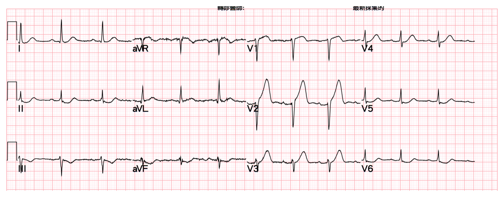
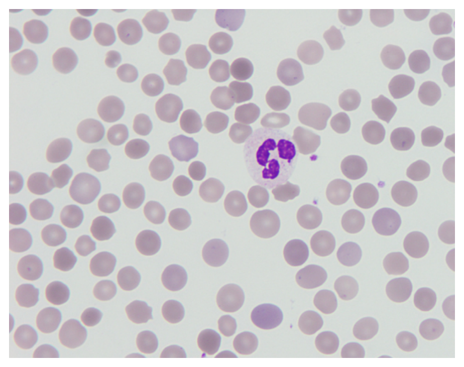
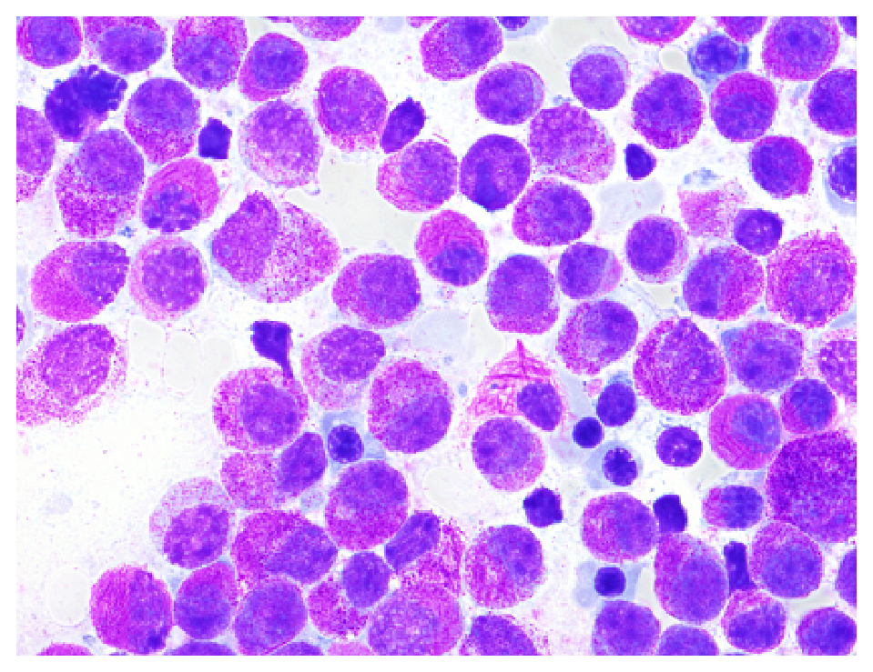
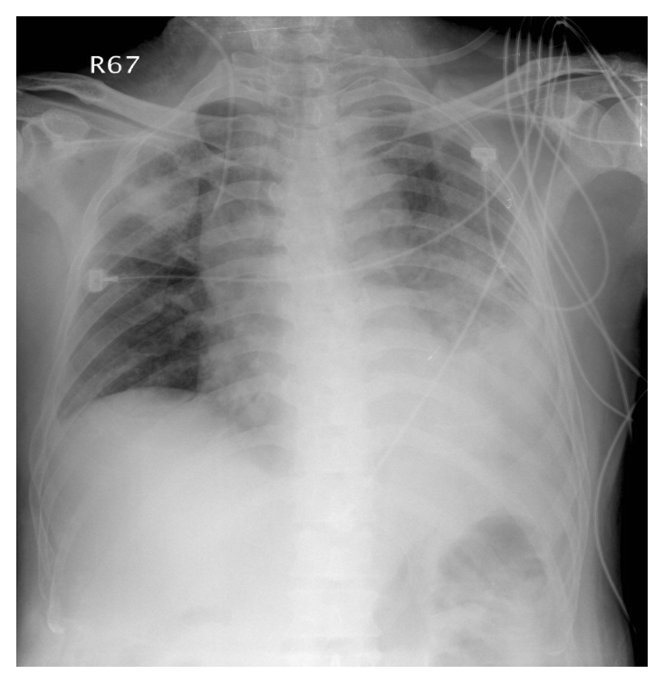
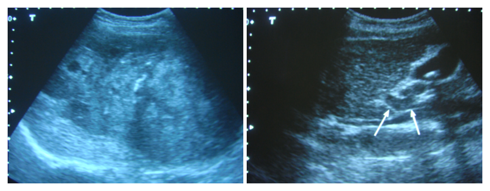

開卷有益 ／
醫師 ／ 醫學（三）（包括內科、家庭醫學科等科目及其相關臨床實例與醫學倫理） ／ 110 年第 1 次110 年第 1 次醫師醫學（三）（包括內科、家庭醫學科等科目及其相關臨床實例與醫學倫理）試題與答案
這一頁是民國 110 年第 1 次醫師醫學（三）（包括內科、家庭醫學科等科目及其相關臨床實例與醫學倫理）的整份歷屆試題，共 80 題，題目與標準答案出自考選部「國家考試試題及測驗式試題答案」開放資料，其中 80 題附有詳解。以下逐題列出題幹、選項與答案；要計時作答或記錄成績，請用線上練習。
考選部原始場次代碼：110020
線上作答這一科 →
全部 80 題
第 1 題
一位48歲男性因急性腹痛住院。他曾接受過腹部手術，在住院前2天開始感到肚臍周圍有陣發性絞痛，厲害時伴有嘔吐，其腹痛與姿勢無關，仍可平躺，這2天沒有大便。身體診察發現腹部鼓脹，腸子蠕動音較高亢，且頻率增快，但無明顯腹部肌肉僵硬（rigidity）現象。下列各項敘述，何者錯誤？
（A） 本病人之腹部Ｘ光片（plain abdomen）很可能會出現小腸脹大，有air-fluid levels，但看不到大腸之腸氣（B） 抽血檢驗很可能會發現澱粉酶（amylase）異常上升10倍以上（C） 其病情很可能與過去的腹部手術有關（D） 對此病人之處置，不必急著開刀，可先放置鼻胃管，經由靜脈給與補充水分及電解質答案：（B）
詳解與考點 正解：腹部手術史、陣發性絞痛、嘔吐、停止排便、腹脹及高亢腸音指向沾黏性小腸阻塞（small bowel obstruction）。此病的澱粉酶可能輕度上升，卻不會典型地上升至10倍以上；如此顯著上升較應考慮急性胰臟炎等病因，故錯誤的是B。
A：小腸阻塞的腹部X光片常見擴張的小腸袢及air-fluid levels；完全阻塞時遠端大腸腸氣可減少或消失，敘述合理。
C：既往腹部手術會造成沾黏，是成人小腸阻塞的重要常見原因，與本例高度相符。
D：沒有腹膜炎、缺血或穿孔線索時，可先禁食、鼻胃管減壓及靜脈補充水分與電解質並密切觀察；它看似延誤手術，但適用於此類無絞窄徵象的初期處置。
本題考點：小腸阻塞（small bowel obstruction）的臨床表現；術後沾黏（postoperative adhesion）；腸阻塞初期的腸胃減壓（nasogastric decompression）與液體電解質復甦。
第 2 題
美國Dr. Linda Fried團隊所提出的老人衰弱（frailty）定義不包括下列何者？
（A） 認知功能不佳（B） 手握力不足（C） 體重下降（D） 行動遲緩答案：（A）
詳解與考點 正解：Fried frailty phenotype的五項身體表徵：非意圖性體重下降、疲憊、活動量低、步行速度慢與握力弱。認知功能不佳雖常與衰弱共存，卻不屬於此定義的五項標準，故選A。
B：手握力不足代表虛弱（weakness），是Fried衰弱表型的組成項目。
C：非意圖性體重下降是Fried衰弱表型的重要項目，反映營養與生理儲備下降。
D：行動遲緩對應步行速度變慢（slowness），也是該表型的診斷項目。
本題考點：Fried衰弱表型（Fried frailty phenotype）；衰弱（frailty）的五項身體表徵；認知障礙（cognitive impairment）可共病但不等於Fried定義本身。
第 3 題
下列何者不是體溫偏低（hypothermia）的危險因子（risk factor）？
（A） 甲狀腺功能低下（hypothyroidism）（B） 30歲至50歲之間的成年人（C） 休克（shock）（D） 營養不良（malnutrition）答案：（B）
詳解與考點 正解：體溫偏低的危險因子。30歲至50歲的一般成年人通常具正常體溫調節能力，若無暴露、疾病或藥物等條件，並非典型高危族群，故選B。
A：甲狀腺功能低下會降低產熱與代謝率，增加低體溫風險。
C：休克使組織灌流下降且可能伴隨暴露、失血或代謝失衡，會增加低體溫風險。
D：營養不良使能量儲備與產熱能力不足，是低體溫的危險因子。
本題考點：體溫偏低（hypothermia）的危險因子；內分泌低代謝狀態（hypothyroidism）；休克（shock）與營養不良（malnutrition）造成產熱或灌流不足。
第 4 題
有關高脂血症治療用藥之敘述，下列何者錯誤？
（A） fibric acid derivatives可以減少膽結石的生成（B） statins可能造成肌肉酸痛（C） nicotinic acid的適應症包括高密度脂蛋白膽固醇（high-density lipoprotein cholesterol，HDL-C）過低（D） omega-3 fatty acids可以增加triglyceride（TG）的分解代謝（catabolism）答案：（A）
詳解與考點 正解：fibrate對膽汁組成的影響。fibric acid derivatives可增加膽汁膽固醇排出，反而提高膽結石形成風險，不能說可減少其生成，故錯誤的是A。
B：statins少數病人會出現肌肉痠痛或肌病，是臨床上需留意的不良反應。
C：nicotinic acid可提高HDL-C，過去可用於HDL-C偏低合併其他脂質異常的治療考量，敘述的藥理方向正確。
D：omega-3 fatty acids可降低三酸甘油脂，與減少肝臟VLDL產生及促進TG代謝有關，敘述合理。
本題考點：fibrates（fibric acid derivatives）的膽結石風險；statins的肌肉不良反應；omega-3 fatty acids對三酸甘油脂（triglyceride, TG）的作用。
第 5 題
接受腎移植後可能出現的伺機性感染（opportunistic infection）中，下列何者感染較常出現於移植後一個月內？
（A） Herpesvirus（B） Aspergillus（C） Nocardia（D） Hepatitis C答案：（A）
詳解與考點 正解：腎移植後感染風險與免疫抑制強度及時間相關。移植後首月主要是手術、住院與高強度免疫抑制期，Herpesvirus的再活化或感染可在此早期出現，四項中最符合題意，故選A。
B：Aspergillus屬嚴重伺機性黴菌感染，但較常見於持續重度免疫抑制、排斥治療或其他高危情境，並非本題所問最典型的首月感染。
C：Nocardia常見於較晚期或長期細胞免疫受抑的移植受者，時間分布通常不以首月為主。
D：Hepatitis C多為移植前既有感染或經供者傳播後的問題，不是移植後一個月內最常見的伺機性感染。
本題考點：器官移植後感染（post-transplant infection）的時間軸；Herpesvirus再活化（reactivation）；伺機性感染（opportunistic infection）與免疫抑制強度的關係。
第 6 題
臨床上診斷心包填塞（pericardial tamponade）需要高度的警覺性，臨床上心包填塞的Beck's triad是指下列那一種情況？
（A） 低血壓（hypotension），低沉（muffled）的心音，Kussmaul’s徵候（B） 心包摩擦音（friction rub），低血壓，低沉的心音（C） 低沉的心音，頸靜脈怒張（jugular vein distention），低血壓（D） Kussmaul’s徵候，心包摩擦音，心電圖上QRS波電位降低答案：（C）
詳解與考點 正解：Beck's triad，為心包填塞的經典臨床三徵：低血壓、頸靜脈怒張與低沉心音。這反映心包腔壓力上升限制心室舒張、降低心輸出量，故選C。
A：Kussmaul's sign是吸氣時頸靜脈壓不降反升，較常與縮窄性心包膜炎、限制型心肌病等相關，不是Beck's triad的組成。
B：心包摩擦音提示心包膜炎，並非Beck's triad的必要組成；它看似與心包疾病相關，卻不能取代頸靜脈怒張。
D：Kussmaul's sign、心包摩擦音與低QRS電位都可在特定心包疾病出現，但並非心包填塞的經典三徵組合。
本題考點：心包填塞（pericardial tamponade）；Beck's triad；頸靜脈怒張（jugular venous distention）與阻塞性休克（obstructive shock）。
第 7 題
許多疾病可引發次發性肺高壓（secondary pulmonary hypertension），下列何者除外？
（A） 肝硬化合併肝門靜脈高壓（liver cirrhosis with portal hypertension）（B） 心包膜填塞（pericardial tamponade）（C） 結締性組織疾病（connective tissue disease），如硬皮症（D） 慢性阻塞性肺病（chronic obstructive pulmonary disease）答案：（B）
詳解與考點 正解：「除外」，即找出不屬於次發性肺高壓常見病因者。心包膜填塞造成的是心臟舒張受限與阻塞性循環障礙，並非肺血管阻力長期升高所致的典型次發性肺高壓病因，故選B。
A：肝硬化合併門脈高壓可相關於門脈肺高壓（portopulmonary hypertension），屬次發性肺高壓的病因。
C：硬皮症等結締組織疾病可造成肺血管病變或間質性肺病，與肺高壓有明確關聯。
D：慢性阻塞性肺病可因慢性低氧與肺血管重塑引發肺高壓，是常見的次發性原因。
本題考點：次發性肺高壓（secondary pulmonary hypertension）；門脈肺高壓（portopulmonary hypertension）；慢性低氧性肺血管重塑（pulmonary vascular remodeling）。
第 8 題
下列有關先天性主動脈狹縮（congenital coarctation of the aorta）之敘述，何者錯誤？
（A） 先天性雙主動脈瓣（congenital bicuspid aortic valve）為常見的合併先天性異常（B） 通常下肢血壓會較上肢為低（C） 可在兩側肩胛骨間區域聽到輕度收縮期雜音（D） 胸部X光檢查在第3～9肋骨上緣可看到凹痕（notching）答案：（D）
詳解與考點 正解：主動脈狹縮的肋骨凹痕位置。側枝循環使肋間動脈擴張，胸部X光可見肋骨下緣受侵蝕形成notching，而非第3～9肋骨上緣，故錯誤的是D。
A：先天性雙主動脈瓣是主動脈狹縮常見的合併先天性心臟異常，敘述正確。
B：狹窄位於供應下半身的主動脈段時，下肢灌流壓較低，通常可見上肢血壓高於下肢。
C：血流通過狹窄處與側枝循環可在背部、兩側肩胛骨間區域聽到收縮期雜音，敘述合理。
本題考點：先天性主動脈狹縮（coarctation of the aorta）；上下肢血壓差（upper-lower extremity blood pressure gradient）；肋骨凹痕（rib notching）位於肋骨下緣。
第 9 題
有關慢性心衰竭（左心室射出分量<35%）的口服藥物治療原則，何者錯誤？
（A） angiotensin-converting enzyme inhibitor或 angiotensin receptor blocker屬優先選用藥物（B） 乙型交感神經阻斷劑（β-blocker，如carvedilol or bisoprolol）如臨床無水腫狀況亦應優先選用（C） aldosterone antagonist（aldactone）即使病人臨床上並無水腫現象亦屬優先選用藥物（D） 口服硝酸鹽（nitrates）及hydralazine血管擴張劑組合，宜優先選用答案：（D）
詳解與考點 正解：射出分量降低的慢性心衰竭口服治療中「優先選用」的原則。ACE inhibitor或ARB、具實證的β-blocker及適當病人的aldosterone antagonist可改善預後；口服硝酸鹽與hydralazine組合只適用於特定無法使用標準神經荷爾蒙阻斷治療者或特定族群，不能一概列為優先選用，故選D。
A：ACE inhibitor或ARB可抑制不利的腎素－血管張力素系統活化，是射出分量降低心衰竭的核心治療方向。
B：病人臨床穩定、無明顯鬱血時，具實證的β-blocker可優先納入長期治療，並非只在有水腫時才使用。
C：aldosterone antagonist可用於符合適應症且腎功能與血鉀容許的病人，目的在改善預後，不以是否有水腫作為唯一條件。
本題考點：射出分量降低心衰竭（heart failure with reduced ejection fraction, HFrEF）；神經荷爾蒙阻斷（neurohormonal blockade）；hydralazine-nitrate組合的特定適應情境。
第 10 題
下列何者比較不會造成atrioventricular block？
（A） carotid sinus hypersensitivity（B） acute inferior wall myocardial infarction（C） hyperthyroidism（D） hyperkalemia答案：（C）
詳解與考點 正解：何者「比較不會」造成房室傳導阻滯。甲狀腺功能亢進通常增加交感活性、造成心搏過速或心房顫動，並非典型導致atrioventricular block的狀態，故選C。
A：carotid sinus hypersensitivity會因迷走神經反射增加而抑制房室結傳導，可造成緩脈或傳導阻滯。
B：急性下壁心肌梗塞常涉及右冠狀動脈供血區，房室結受缺血或迷走張力增加影響，容易發生房室傳導阻滯。
D：hyperkalemia會降低心肌細胞膜電位並抑制傳導，可造成PR延長、QRS變寬與嚴重的傳導阻滯。
本題考點：房室傳導阻滯（atrioventricular block）；下壁心肌梗塞（inferior myocardial infarction）；高血鉀（hyperkalemia）與心臟傳導異常。
第 11 題
一位50歲男性病人，因急性下壁心肌梗塞，接受緊急心導管治療，在right coronary artery置放支架後血壓130/90 mmHg，心跳90/min，轉至加護病房治療，隔天要拔除femoral sheath時，病人主訴做導管處傷口異常疼痛，之後臉色蒼白，血壓下降至80/50 mmHg，心跳也下降至40/min，則此時立即的處理何者最恰當？
（A） IV dopamine or norepinephrine（B） IV atropine and fluid challenge（C） 緊急放置主動脈氣球幫浦（D） 回導管室做心導管檢查答案：（B）
詳解與考點 正解：拔除femoral sheath時出現傷口疼痛、臉色蒼白、血壓下降及心跳降至40/min，最符合迷走神經反射（vasovagal reaction）。立即處置是靜脈atropine處理症狀性緩脈，並給予輸液挑戰改善低血壓與相對低血容量，故選B；同時須壓迫傷口並評估出血。
A：dopamine或norepinephrine可用於持續性休克的升壓支持，但此時應先處理最可能的迷走反射性緩脈與容量不足。
C：主動脈氣球幫浦用於特定心因性休克或嚴重冠心病支持，不能作為此典型拔鞘誘發反射的第一時間處置。
D：若後續懷疑持續出血、急性冠心症或其他血管併發症才進一步檢查；當下的生命徵象模式優先支持立即床邊復甦。
本題考點：迷走神經反射（vasovagal reaction）；症狀性緩脈（symptomatic bradycardia）的初期處置；股動脈鞘管（femoral sheath）移除後的出血與血管迷走反應監測。
第 12 題
下列有關經皮冠狀動脈介入術（PCI）的敘述何者錯誤？
（A） 對穩定心絞痛病人而言，當代PCI與積極藥物治療相比，可較有效減少心絞痛、增加運動耐受、增進生活質量，並減少心肌梗塞及死亡（B） 使用藥物塗抹金屬支架，比起傳統裸金屬支架，再狹窄率變小，但仍有支架血栓風險（C） 雖然現今PCI的成功率已大量提升，但在慢性全阻塞病灶的成功率各家報告差異甚大（D） 糖尿病人合併複雜多處冠狀動脈病灶時，以外科繞道手術治療優於PCI答案：（A）
詳解與考點 正解：穩定心絞痛的PCI與積極藥物治療比較。PCI可較快改善部分病人的心絞痛與生活品質，但不能概括宣稱相較積極藥物治療可減少心肌梗塞及死亡；穩定冠心病的預後改善須依病人解剖與臨床風險個別判斷，故錯誤的是A。
B：藥物塗抹金屬支架可降低再狹窄，但仍有支架血栓風險，故需依情況使用適當抗血小板治療，敘述正確。
C：慢性全阻塞病灶的PCI成功率受病灶長度、鈣化、術者技術與設備影響，各研究與中心結果可有差異。
D：糖尿病合併複雜多處冠狀動脈病灶時，外科繞道手術常是重要且可能較佳的血運重建策略，敘述正確。
本題考點：經皮冠狀動脈介入術（percutaneous coronary intervention, PCI）；穩定冠心病（stable coronary artery disease）的症狀控制與預後；血運重建（revascularization）策略的個別化選擇。
第 13 題
48歲男性，有高血壓及吸菸史，早上8點進辦公室便感到胸口悶痛、冒冷汗，被同事送至急診，9點做心電圖顯示如下圖，你是急診醫師，下列判斷及處置何者正確？

（A） 儘快完成身體診察，若血壓穩定且無肺水腫，則應等待抽血檢測心肌酶是否升高，以決定診斷及後續處置（B） 心電圖顯示急性ST段上升心肌梗塞，應盡快通知心臟科醫師並啟動緊急心導管流程（C） 給與氧氣鼻管2 L/min，aspirin 100 mg，確認血壓穩定後給與硝酸甘油靜脈注射（nitroglycerin IV drip）（D） 急性藥物溶栓治療可爭取時效，較緊急心導管介入治療療效更好，應優先考慮答案：（B）
詳解與考點 正解：心電圖胸前導程 V2、V3 可見明顯 ST 段上升，合併此人持續胸悶痛、冒冷汗及高血壓、吸菸等冠心病危險因子，應視為急性前壁 ST 段上升心肌梗塞（ST-segment elevation myocardial infarction, STEMI）。STEMI 的再灌流決策不能等待心肌酶結果，應立即通知心臟科並啟動緊急心導管、安排初級經皮冠狀動脈介入治療，故選 B。
A：心肌肌鈣蛋白等心肌損傷標記可協助診斷，但早期發作時可能尚未上升；當症狀與心電圖已符合 STEMI，不能等待抽血結果才啟動再灌流處置，否則延誤搶救缺血心肌。
C：急性冠心症的氧氣治療應依低血氧或呼吸窘迫等情況給予，血氧正常者常規給氧沒有必要；此外，aspirin 100 mg 並非急性 STEMI 常用的初始負荷劑量。硝酸甘油可在適當血流動力學條件下緩解症狀，但不能取代立即再灌流，故整體處置不正確。
D：在可及時完成的情況下，初級經皮冠狀動脈介入治療是 STEMI 優先的再灌流方式；藥物溶栓是無法在適當時限內取得介入治療時的替代方案，並非療效更好而應優先選擇。
本題考點：ST 段上升心肌梗塞（ST-segment elevation myocardial infarction, STEMI）可由相鄰胸前導程的 ST 段上升辨識；再灌流治療（reperfusion therapy）須爭取時間，能及時施行時以初級經皮冠狀動脈介入治療（primary percutaneous coronary intervention）為優先。
第 14 題
李先生，29歲，是位業務員。他過去一年來斷斷續續有下腹痛的現象，伴隨有解便次數增加及軟便情形，且常於上完大號後腹痛減輕。有關病情，下列何者最不正確？
（A） 病史詢問應包含誘發因素、過去的內外科病史、家族大腸直腸腫瘤病史等（B） 如果常大便大不乾淨，即表示直腸附近長了腫瘤（C） 如果李先生晚上常去上大號，不一定有器質性的問題（D） 除身體診察外，須留意其大便的型態及顏色，並詢問體重是否變動答案：（B）
詳解與考點 正解：反覆下腹痛、排便後緩解、排便頻率增加與軟便，較符合腸躁症（irritable bowel syndrome, IBS）的症狀型態；「常有排便不盡感」本身不能直接推論直腸附近有腫瘤，故最不正確的是B。這是強誘答，因排便習慣改變確實需評估警訊，卻不能以單一症狀作腫瘤診斷。
A：評估慢性腹痛與排便異常時，誘發因素、既往病史及大腸直腸腫瘤家族史都會影響鑑別診斷，應納入病史詢問。
C：夜間排便是需提高警覺的線索，但不一定就證明有器質性疾病；仍須結合出血、體重減輕、貧血及年齡等警訊判斷。
D：糞便型態、顏色及體重變化可協助辨識出血、吸收不良、發炎或惡性疾病等警訊，除身體檢查外應主動詢問。
本題考點：腸躁症（irritable bowel syndrome, IBS）的症狀型態；警訊症狀（alarm features）；排便不盡感（tenesmus）不可單獨診斷大腸直腸腫瘤。
第 15 題
一位48歲男性，因5個月來出現餐後腹痛、腹脹及嘔吐等症狀而就醫。他在5年前曾因胃穿孔而開刀（subtotalgastric resection+Billroth II anastomosis）。病人之body mass index是19 kg/m2、血清 albumin：3.1（normal：4.3～5.4）g/dL、Hb：9.6（normal：13～17）g/dL、MCV（mean corpuscular volume）：106（normal：80～100）fL，下列何者是最可能的診斷？
（A） irritable bowel syndrome（B） bile reflux gastropathy（C） afferent loop syndrome（D） Zollinger-Ellison syndrome答案：（C）
詳解與考點 正解：Billroth II胃切除術後多年出現餐後腹痛、腹脹與嘔吐。Billroth II會形成輸入袢，若輸入袢發生部分阻塞，膽汁、胰液與腸液滯留可於餐後造成疼痛、膨脹與嘔吐，最符合afferent loop syndrome，故選C。低albumin、貧血與MCV升高亦支持術後營養吸收問題。
A：irritable bowel syndrome雖可有腹痛與排便改變，但不會合理解釋胃切除術後的餐後嘔吐、低albumin及大球性貧血。
B：bile reflux gastropathy可造成上腹不適、膽汁性胃炎或嘔吐，但無法如輸入袢阻塞般完整解釋本例餐後腹脹與結構性術後病史。
D：Zollinger-Ellison syndrome以胃酸過多、難治性消化性潰瘍或腹瀉為線索，與Billroth II後的典型餐後阻塞表現不符。
本題考點：輸入袢症候群（afferent loop syndrome）；Billroth II anastomosis的術後併發症；胃切除後營養不良（postgastrectomy malnutrition）與大球性貧血（macrocytic anemia）。
第 16 題
58歲酒精性肝硬化患者，有食道靜脈瘤出血病史，因吐血而就醫，血壓90/50 mmHg、心跳：148/min，意識不清並躁動，下列的初步處置，何者為宜？①建立中心靜脈導管或兩條周邊靜脈導管以利大量輸液輸注 ②給與propranolol（β blocker）以降低肝門靜脈壓，減緩出血程度 ③安排大腸鏡檢查 ④給與氣管插管以避免吸入性肺炎
（A） ①②③（B） ①②④（C） 僅②③（D） 僅①④答案：（D）
詳解與考點 正解：題幹的吐血合併低血壓、心搏過速與意識不清，提示食道靜脈瘤大出血造成失血性休克且有吸入風險。初期須先建立兩條大口徑周邊靜脈或中心靜脈通路以利復甦與輸血，並因意識不清、躁動而氣管插管保護呼吸道；故正確組合為僅①④，選 D。
A：①建立輸液通路正確，但②propranolol 是穩定後用來預防靜脈瘤再出血的非選擇性 β 阻斷劑；在低血壓休克的急性出血期可能使血流動力學更差，不能作為此刻初步處置。
B：①與④均是優先處置，但②不適合在休克當下給予，因此此組合錯誤。②看似能降低門脈壓，卻忽略病人已低血壓且需先復甦、保護氣道。
C：②不宜於休克急性期給予，③大腸鏡則用於下消化道出血評估，無法處理題幹所示的上消化道吐血與靜脈瘤出血。
本題考點：急性上消化道出血（acute upper gastrointestinal bleeding）的初期處置以氣道、呼吸、循環為先；食道靜脈瘤出血（esophageal variceal bleeding）合併意識障礙時應優先保護呼吸道；非選擇性 β 阻斷劑（nonselective beta-blocker）主要用於穩定後的再出血預防。
第 17 題
一位40歲女性病人，主訴胸口燒灼感，正中胸骨下微痛，平躺睡覺時不適加劇，甚至有咳嗽之情形。下列何者為最可能之診斷？
（A） 下壁心肌梗塞（B） 慢性支氣管炎（C） 胃食道逆流疾病（D） 鬱血性心衰竭答案：（C）
詳解與考點 正解：胸口燒灼感、胸骨後微痛、平躺時加劇並伴咳嗽，是胃內容物逆流刺激食道及咽喉的典型線索，最符合胃食道逆流疾病（gastroesophageal reflux disease, GERD），故選 C。
A：下壁心肌梗塞可有上腹不適而成為誘答，但通常是急性壓迫性胸痛，可伴出汗、呼吸困難或心電圖變化；姿勢性平躺加劇與夜間咳嗽更支持逆流。
B：慢性支氣管炎以長期咳嗽、咳痰為主，不能合理解釋胸骨後燒灼感及平躺後加重的症狀組合。
D：鬱血性心衰竭平躺可因肺鬱血出現呼吸困難或夜間陣發性呼吸困難，但題幹沒有水腫、端坐呼吸或心衰竭病史，且燒灼性胸骨後痛較不相符。
本題考點：胃食道逆流疾病（gastroesophageal reflux disease, GERD）常表現為胸骨後燒灼感與反酸；平躺使逆流加重，亦可引起夜間咳嗽等食道外症狀。
第 18 題
一位53歲女性病人主訴食慾不振與茶色尿有10天。身體診察顯示無發燒、無腹部壓痛，但有黃疸。血液檢查顯示：bilirubin（total/direct）：8.2/5.8 mg/dL、ALT：148 U/L、WBC：5600 /mm3。下列進一步之檢查何者對診斷沒有幫助？
（A） reticulocyte count（B） alkaline phosphatase（C） hepatitis B surface antigen（D） abdominal sonography答案：（A）
詳解與考點 正解：茶色尿、黃疸及直接膽紅素上升提示結合型高膽紅素血症，鑑別重點在肝細胞性、膽汁鬱積性與膽道阻塞。reticulocyte count 用於評估溶血造成的未結合型高膽紅素血症，與此病例的型態最不相符，對診斷幫助最小，故選 A。
B：alkaline phosphatase 可協助辨別膽汁鬱積或膽道阻塞型態，和 ALT 的變化一同判讀，對此類直接高膽紅素血症有幫助。
C：hepatitis B surface antigen 可檢驗是否有 B 型肝炎感染；即使 ALT 僅中度上升，病毒性肝炎仍是黃疸的鑑別診斷之一。
D：abdominal sonography 可評估膽管擴張、膽結石及肝膽結構異常，是無痛性黃疸初步鑑別肝外阻塞的重要檢查。
本題考點：黃疸（jaundice）應先區分未結合與結合型高膽紅素血症；網狀紅血球計數（reticulocyte count）主要協助判斷溶血；鹼性磷酸酶（alkaline phosphatase）與腹部超音波用於膽汁鬱積及膽道阻塞評估。
第 19 題
一位32歲女性主訴全身皮膚發癢與膚色變黑。血液檢查顯示：bilirubin（total/direct）：3.8/2.9 mg/dL，ALT：235 U/L（正常值＜40 U/L），alkaline phosphatase：312 U/L（正常值＜100 U/L）。腹部超音波並無特殊之發現。下列何者對此病人之診斷沒有幫助？
（A） hepatitis B surface antigen（B） anti-hepatitis A antibody IgG（C） antimitochondrial antibody（D） antinuclear antibody答案：（B）
詳解與考點 正解：搔癢、色素沉著、直接膽紅素上升與 alkaline phosphatase 明顯上升，呈膽汁鬱積型肝病；超音波無特殊發現時須考慮肝內膽汁鬱積與自體免疫病因。anti-hepatitis A antibody IgG 代表既往感染或免疫狀態，不支持急性 A 型肝炎診斷，對本例診斷幫助最小，故選 B。
A：hepatitis B surface antigen 可偵測目前 B 型肝炎感染，是肝功能異常與黃疸的基本病因評估之一。
C：antimitochondrial antibody 與原發性膽汁性膽管炎（primary biliary cholangitis）高度相關；中年女性合併搔癢與膽汁鬱積型數值時尤其具鑑別價值。
D：antinuclear antibody 雖非單獨確診檢驗，但可協助評估自體免疫性肝炎或原發性膽汁性膽管炎等自體免疫性肝膽疾病。
本題考點：膽汁鬱積型肝病（cholestatic liver disease）常有搔癢及 alkaline phosphatase 上升；抗粒線體抗體（antimitochondrial antibody）是原發性膽汁性膽管炎的重要線索；anti-HAV IgG 表示既往暴露或免疫，不等同急性感染。
第 20 題
幽門螺旋桿菌（Helicobacter pylori）感染不會造成下列何者疾病？
（A） 消化性潰瘍（B） 胃食道逆流性疾病（C） 胃腺癌（D） 胃黏膜相關淋巴組織淋巴癌答案：（B）
詳解與考點 正解：本題問幽門螺旋桿菌感染「不會造成」的疾病。幽門螺旋桿菌定殖於胃黏膜，可造成慢性胃炎、消化性潰瘍、胃腺癌及胃黏膜相關淋巴組織淋巴癌；胃食道逆流性疾病不是其典型致病結果，故選 B。
A：幽門螺旋桿菌會破壞胃十二指腸黏膜防禦並造成慢性發炎，是消化性潰瘍的重要病因，因此不是答案。
C：長期幽門螺旋桿菌相關慢性胃炎可經萎縮、腸化生等路徑增加胃腺癌風險，敘述正確。
D：胃黏膜相關淋巴組織淋巴癌（MALT lymphoma）與幽門螺旋桿菌感染密切相關，根除感染後部分早期病灶可緩解，故非答案。
本題考點：幽門螺旋桿菌（Helicobacter pylori）與消化性潰瘍（peptic ulcer disease）、胃腺癌（gastric adenocarcinoma）、胃 MALT 淋巴癌（MALT lymphoma）相關；胃食道逆流疾病（GERD）並非其典型併發症。
第 21 題
關於Charcot's triad，下列何者不是條件之一？
（A） 右上腹部可以觸及脹大的膽囊（B） 右上腹部或上腹部疼痛（C） 發冷發熱（D） 黃疸答案：（A）
詳解與考點 正解：Charcot's triad 是急性膽管炎的經典三聯徵：右上腹或上腹疼痛、發燒或發冷、黃疸。可觸及脹大的膽囊不在其中，故選 A。
B：右上腹部或上腹部疼痛是膽道阻塞與感染造成的典型表現，屬 Charcot's triad 的一項，故不是答案。
C：發冷發熱反映膽道感染，為 Charcot's triad 的一項，故不是答案。
D：黃疸反映膽汁排出受阻，為 Charcot's triad 的一項，故不是答案。
本題考點：Charcot's triad 指急性膽管炎（acute cholangitis）的腹痛、發燒與黃疸；可觸及膽囊是其他膽道疾病的身體檢查線索，並非此三聯徵內容。
第 22 題
對於早期（TNM stage 1或BCLC stage 0 or A）的肝細胞癌（hepatocellular carcinoma），且沒有肝失代償（hepatic decompensation）的情況下，以下那一種治療是較好的選擇？
（A） 標靶治療（B） 化學治療（C） 開刀或無線射頻燒灼術（radiofrequency ablation）（D） 經動脈栓塞化學治療（transcatheter arterial chemoembolization, TACE）答案：（C）
詳解與考點 正解：早期肝細胞癌且尚無肝失代償，治療目標是根治性控制腫瘤；可行肝切除時開刀切除，或對適當小病灶採無線射頻燒灼術（radiofrequency ablation, RFA），均屬早期病人較佳的根治性選擇，故選 C。
A：標靶治療主要用於不適合根治性局部治療的進展期或晚期肝細胞癌，非早期、肝功能代償良好者的優先選項。
B：傳統全身化學治療對肝細胞癌效果有限，不能取代早期可施行的根治性局部治療。
D：經動脈栓塞化學治療（TACE）較常用於中期、不可切除而肝功能仍可代償的肝細胞癌；它看似是局部治療，卻非本題早期病灶的首選根治策略。
本題考點：早期肝細胞癌（early hepatocellular carcinoma）以切除術（resection）或局部消融（local ablation）為根治性治療；TACE 多用於中期肝細胞癌（intermediate-stage HCC）；肝功能代償狀態影響治療選擇。
第 23 題
關於大腸憩室症（diverticular disease），下列敘述何者正確？
（A） 大部分的大腸憩室炎必須外科手術（B） 診斷最好的工具是plain abdominal film（C） 服用抗發炎藥物如mesalazine可以減少症狀性憩室疾病的復發（D） 抽菸並非大腸憩室炎的危險因子答案：（C）
詳解與考點 正解：官方答案為 C。mesalazine 可用於症狀性未併發憩室疾病的症狀控制；惟現行證據不支持用於預防急性憩室炎復發。
A：多數急性大腸憩室炎可先採非手術治療；手術通常保留給穿孔、瀰漫性腹膜炎、膿瘍無法控制、阻塞或反覆複雜病程，不能說大部分都必須手術。
B：急性憩室炎的影像評估以腹部電腦斷層較能判斷發炎範圍及併發症，plain abdominal film 的敏感度與特異性不足，非最佳診斷工具。
D：抽菸與大腸憩室炎及其併發症風險增加有關，將其說成非危險因子錯誤。
本題考點：大腸憩室疾病（diverticular disease）的急性評估常使用腹部電腦斷層（computed tomography）；複雜性憩室炎（complicated diverticulitis）才較可能需要介入或手術；mesalazine 的復發預防角色屬證據與適用情境需審慎判讀的議題。
第 24 題
下列何種檢驗對區分腹瀉或腎小管酸血症（renal tubular acidosis）引起正常陰離子隙代謝性酸中毒最具診斷價值？
（A） 尿陰離子隙（urine anion gap）（B） 血陰離子隙（blood anion gap）（C） 血鉀濃度（D） 血氯濃度答案：（A）
詳解與考點 正解：腹瀉與腎小管酸血症都可造成正常陰離子隙代謝性酸中毒，關鍵在腎臟是否適當增加銨離子排泄。尿陰離子隙（urine anion gap, UAG）可作為尿中銨排泄的間接指標：腹瀉時腎臟排銨增加，UAG 傾向為負；腎小管酸血症時排銨不足，UAG 傾向為正，故選 A。
B：血陰離子隙可先確認酸中毒是否屬正常陰離子隙型態，但題幹兩種病因都屬此型態，不能有效區分。
C：血鉀可提供線索，例如第 4 型腎小管酸血症常有高血鉀，但腹瀉與不同類型腎小管酸血症的血鉀表現可重疊，診斷價值不及 UAG。
D：血氯常因碳酸氫根流失而相對上升，但兩種病因皆可能呈高氯性代謝性酸中毒，無法作為最具區分力的檢驗。
本題考點：正常陰離子隙代謝性酸中毒（normal anion gap metabolic acidosis）常見於腹瀉與腎小管酸血症；尿陰離子隙（urine anion gap）間接反映尿銨（NH4+）排泄；負 UAG 支持腎臟對腸道碳酸氫根流失的適當代償。
第 25 題
56歲男性病人因意識不清至急診，身體診察發現呼吸22次/分鐘且深沉，初步血液檢查K+ 4.6 mEq/L、Na+ 138mEq/L、Cl- 99 mEq/L、HCO3- 10 mEq/L，動脈血氣分析呈現pH 7.20、pCO2 22 mmHg，此病人最不可能的診斷為：
（A） 乳酸酸血症（lactic acidosis）（B） 酮酸血症（ketoacidosis）（C） 急性腹瀉（D） 慢性腎衰竭答案：（C）
詳解與考點 正解：先算陰離子隙：Na+ −（Cl−＋HCO3−）＝138−（99+10）＝29 mEq/L，明顯升高，故為高陰離子隙代謝性酸中毒。再以 Winter's formula 預測 pCO2=1.5×10+8=23 mmHg，容許範圍約 21–25 mmHg，實測 22 mmHg，呼吸代償適當。乳酸酸血症、酮酸血症與慢性腎衰竭都可造成高陰離子隙酸中毒；急性腹瀉典型造成正常陰離子隙酸中毒，最不可能，故選 C。
A：乳酸累積會增加未測得陰離子並造成高陰離子隙代謝性酸中毒，可與本例數值相符。
B：酮體為有機酸，酮酸血症常造成高陰離子隙代謝性酸中毒，亦可引起深沉呼吸。
D：慢性腎衰竭因酸性代謝物排除下降可造成高陰離子隙代謝性酸中毒，與本例型態相容。
本題考點：陰離子隙（anion gap）＝Na+−（Cl−＋HCO3−）；高陰離子隙代謝性酸中毒（high anion gap metabolic acidosis）見於乳酸酸血症、酮酸血症及腎衰竭；Winter's formula 用於判讀代謝性酸中毒的呼吸代償。
第 26 題
65歲女性病人糖尿病已15年，1個月前血中肌酸酐（creatinine）為1.1 mg/dL，3天前開始咳嗽有痰、發燒、呼吸困難、急促，今日意識不清、發燒持續，送至急診，血壓130/70 mmHg，身體診察右下胸有濁音，胸部X光呈現右下肺浸潤病灶，血中白血球16,580 /μL、血中肌酸酐8.5 mg/dL、血中鉀離子6.5 mEq/L、HCO3- 12mEq/L，則病人此時最不適合接受何種治療？
（A） 連續性靜脈血液過濾術（continuous venovenous hemofiltration）（B） 間歇性血液透析術（hemodialysis）（C） 血漿置換術（plasmapheresis）（D） 腹膜透析（peritoneal dialysis）答案：（C）
詳解與考點 正解：原本肌酸酐 1.1 mg/dL、目前升至 8.5 mg/dL，且有 K+ 6.5 mEq/L、HCO3− 12 mEq/L 與意識不清，為重度急性腎損傷併高血鉀與酸中毒，需考慮腎臟替代治療。血漿置換術（plasmapheresis）是移除致病抗體、免疫複合物或特定蛋白的治療，並不能有效取代透析清除鉀離子與酸性代謝物，最不適合，故選 C。
A：連續性靜脈血液過濾術（continuous venovenous hemofiltration）可提供較平穩的溶質與體液控制，適用於需要腎臟替代治療的重症病人。
B：間歇性血液透析（hemodialysis）能迅速清除鉀離子及校正酸中毒，對高血鉀合併急性腎損傷是合適選項。
D：腹膜透析雖清除速度通常較慢，仍屬腎臟替代治療方式；相較於血漿置換，較能處理本例的尿毒性代謝異常。
本題考點：急性腎損傷（acute kidney injury）合併難治性高血鉀、嚴重酸中毒或尿毒症症狀時須考慮腎臟替代治療（renal replacement therapy）；血液透析、連續腎臟替代治療與腹膜透析可清除小分子溶質；血漿置換（plasmapheresis）適應症不同。
第 27 題
一名63歲有高血壓的女性病患經體外碎石後確診為草酸鈣結石，下列何項措施無法預防結石復發？
（A） 喝水保持尿量＞2 L/day（B） 限制飲食鹽分攝取（C） 改用thiazide為降壓藥（D） 減少飲食鈣量攝取答案：（D）
詳解與考點 正解：草酸鈣結石預防並非一味減少飲食鈣；正常飲食鈣可在腸道結合草酸，降低草酸吸收。過度減少飲食鈣反而可能增加尿中草酸與結石風險，因此無法預防復發的是 D。
A：增加飲水以維持尿量＞2 L/day 可降低尿液中鈣、草酸等結石形成物質的過飽和，是基本且有效的預防措施。
B：高鈉飲食會增加尿鈣排泄，限制鹽分有助降低高尿鈣造成的草酸鈣結石風險。
C：thiazide 可減少尿鈣排泄，對高尿鈣相關的鈣結石復發預防有益，因此改作降壓藥是合理選項。
本題考點：草酸鈣結石（calcium oxalate stone）預防包括增加尿量、限制鈉攝取與在適當病人使用 thiazide；正常飲食鈣（dietary calcium）有助腸道結合草酸，過度限鈣可能適得其反。
第 28 題
下列有關腎因性全身纖維化（nephrogenic fibrosing dermopathy）的敘述，何者錯誤？
（A） 與使用gadolinium有關，病症類似scleromyxedema（B） CKD第3期仍可減量使用gadolinium（C） 肝臟疾病是罹患此症的危險因子（D） 血液透析無法清除gadolinium答案：（D）
詳解與考點 正解：血液透析可移除部分 gadolinium，故（D）「無法清除」錯誤。腎因性全身纖維化與含 gadolinium 造影劑暴露相關，尤其須注意嚴重腎功能不全者，故選 D。
A：腎因性全身纖維化與含 gadolinium 造影劑暴露相關，皮膚可有硬化性病變，敘述方向正確。
B：慢性腎臟病第 3 期是否使用 gadolinium，須依腎功能穩定度、造影劑風險群及足以診斷的最低劑量決定；「可用」不等於可任意減量。本題舊有分類脈絡下，這不是最明確的錯誤。
C：嚴重腎功能不全是主要風險背景；肝臟疾病若合併腎功能惡化亦可能增加風險，不能據此判為絕對錯誤。
本題考點：腎因性全身纖維化（nephrogenic systemic fibrosis, NSF）與 gadolinium-based contrast agents 相關；腎功能不全（kidney impairment）是重要風險背景；血液透析（hemodialysis）可清除部分 gadolinium。
第 29 題
關於急性腎損傷（acute kidney injury）的治療方式，下列何者錯誤？
（A） 針對急性腎損傷的治療原則，目前以支持性療法為主（B） 可使用等張生理食鹽水來預防顯影劑造成之急性腎損傷（C） 急性腎損傷若併發高血鉀症，應停用血管張力素轉化酶抑制劑（ACEi）或血管張力素II型受體拮抗劑（ARB）（D） 羥乙基澱粉溶液（hydroxyethyl starch）可有效改善低血容積引發之急性腎損傷答案：（D）
詳解與考點 正解：急性腎損傷的處置以找出並矯正病因、維持灌流與避免腎毒性暴露為主。羥乙基澱粉溶液（hydroxyethyl starch）與急性腎損傷風險增加相關，不能稱為可有效改善低血容積引發急性腎損傷的治療，故錯誤的是 D。
A：目前急性腎損傷沒有可普遍逆轉腎損傷的特效藥，支持性療法、處理病因與適時腎臟替代治療是基本原則，敘述正確。
B：等張生理食鹽水補充可降低低血容量及顯影劑相關腎損傷的風險，是臨床預防策略之一；實際補液須依病人的容量狀態調整。
C：急性腎損傷併高血鉀時，ACEi 或 ARB 可能加重高血鉀或降低腎絲球灌流壓，應重新評估並通常暫停使用，敘述正確。
本題考點：急性腎損傷（acute kidney injury, AKI）以支持性治療（supportive care）及病因矯正為主；顯影劑相關 AKI 的預防重點是適當容量管理；羥乙基澱粉（hydroxyethyl starch）不宜作為 AKI 的治療性擴容液。
第 30 題
63歲女士因背痛服用diclofenac持續半年，因下肢水腫至門診求診，最近無噁心、嘔吐及腹瀉。身體診察查：血壓126/66 mmHg，心跳每分鐘74下，雙側下肢水腫程度1+。血液檢查：白血球7,900/μL，血色素10.9 g/dL，血小板282,000/μL，球蛋白3.9 g/dL，白蛋白3.0 g/dL，尿素氮12 mg/dL，肌酸酐0.63 mg/dL，血糖84 mg/dL，乳酸去氫酶（LDH）288 U/L（正常值131～250 U/L），尿酸9.7 mg/dL，鈉離子136 mEq/L，鉀離子4.2mEq/L，膽固醇260 mg/dL，三酸甘油脂80 mg/dL，低密度膽固醇175 mg/dL。尿液試紙檢查：尿蛋白陰性，尿比重1.015，尿液沉渣無紅血球或白血球。尿液總蛋白質與肌酸酐比值為4.907克/克肌酸酐。下列有關此位病患之敘述，何者正確？
（A） 病患蛋白尿的原因可能是非類固醇抗發炎藥（NSAID）造成（B） 檢anti-phospholipase A2 receptor 抗體有助診斷病因（C） 檢測血清免疫電泳（immunoelectrophoresis）有助診斷病因（D） 此病患首選治療為低劑量血管張力素II型受體拮抗劑答案：（C）
詳解與考點 正解：尿蛋白試紙陰性，但尿液總蛋白質與肌酸酐比值為 4.907 g/g，表示大量蛋白尿未被試紙充分偵測。試紙主要偵測白蛋白，這種落差提示非白蛋白的溢出性蛋白尿，應檢測血清免疫電泳（immunoelectrophoresis）尋找單株免疫球蛋白或輕鏈，故選 C。
A：NSAID 可造成腎臟病變與蛋白尿，因而看似合理；但本例試紙陰性與總蛋白量高的矛盾更指向輕鏈等非白蛋白蛋白尿，而非單憑 NSAID 所致。
B：anti-phospholipase A2 receptor 抗體有助評估原發性膜性腎病變，該病通常以白蛋白尿為主，尿試紙理應較容易呈陽性，與本例不符。
D：ARB 可用於部分白蛋白尿腎病以降低蛋白尿，但病因未明時不能越過單株蛋白篩檢而直接視為首選治療。
本題考點：尿液試紙（urine dipstick）主要偵測白蛋白（albumin）；溢出性蛋白尿（overflow proteinuria）可因免疫球蛋白輕鏈造成試紙陰性但總蛋白高；血清免疫電泳（serum immunoelectrophoresis）有助偵測單株蛋白（monoclonal protein）。
第 31 題
27歲女性，主訴兩手小關節的酸痛，併有光過敏及Raynaud's phenomenon。在門診的檢查結果為：ANA 1：160 speckled, RF 42 IU/mL（normal<10 IU/mL），hemoglobin：10.7 mg/dL，ESR 37 mm/1h，CRP：0.06mg/dL，anti-dsDNA 144 IU/mL（normal<120 IU/mL），anti-SSB: 164 AU/mL（normal <120 AU/mL），anti-RNP：241 AU/mL（normal<120AU/mL），尿液常規檢查正常。這位患者最有可能的診斷為何？
（A） rheumatoid arthritis（B） systemic lupus erythematosus（C） Sjögren's syndrome（D） systemic sclerosis答案：（B）
詳解與考點 正解：年輕女性有小關節痛、光敏感與 Raynaud's phenomenon，並有 ANA 陽性、anti-dsDNA 上升及輕度貧血，整體最符合全身性紅斑狼瘡（systemic lupus erythematosus, SLE），故選 B。尿液正常表示目前未必有狼瘡腎炎，不能排除 SLE。
A：類風濕性關節炎可有小關節痛與 RF 陽性，但 RF 並非特異性，且光敏感、anti-dsDNA 上升較支持 SLE。
C：Sjögren's syndrome 常見口乾、眼乾及 anti-SSA/anti-SSB 相關性；本例雖有 anti-SSB 上升，卻缺乏乾燥症狀，且 anti-dsDNA 與光敏感更具 SLE 指向性。
D：systemic sclerosis 的核心為皮膚硬化、指端潰瘍或特定自體抗體等，Raynaud's phenomenon 單獨存在不足以診斷，且本例整體血清與臨床表現不符。
本題考點：全身性紅斑狼瘡（systemic lupus erythematosus, SLE）常見光敏感、關節症狀與 ANA 陽性；anti-dsDNA 與 SLE 疾病特徵密切相關；Raynaud's phenomenon 可見於多種結締組織疾病，須配合全貌判讀。
第 32 題
乾癬（psoriasis）病人較常出現下列何種基因？
（A） HLA-A2（B） HLA-B27（C） HLA-Cw*06（D） HLA-DR4答案：（C）
詳解與考點 正解：乾癬具有明確遺傳關聯，其中 HLA-Cw*06 是最常被考的 HLA 關聯基因之一，尤其與早發型斑塊型乾癬相關，故選 C。
A：HLA-A2 並非乾癬的典型主要關聯基因，不能作為本題答案。
B：HLA-B27 與脊椎關節炎譜系、強直性脊椎炎及部分乾癬性脊椎病變相關，但不是乾癬皮膚病灶最典型的 HLA 關聯。
D：HLA-DR4 常與某些自體免疫疾病有關，並非乾癬最常見的基因關聯。
本題考點：乾癬（psoriasis）具有多基因遺傳傾向；HLA-Cw*06 是重要遺傳關聯；HLA-B27 較常用於理解脊椎關節炎（spondyloarthritis）相關表現。
第 33 題
Cytoplasmic ANCA（antineutrophil cytoplasmic antibodies）在下列那一種全身性血管炎中出現的百分比最高？
（A） polyarteritis nodosa（B） Wegener’s granulomatosis（C） Goodpasture’s syndrome（D） Takayasu’s arteritis答案：（B）
詳解與考點 正解：Cytoplasmic ANCA（c-ANCA）常針對 proteinase 3（PR3），與 granulomatosis with polyangiitis 最相關；舊稱 Wegener's granulomatosis，故在選項中其出現比例最高，選 B。
A：polyarteritis nodosa 為中型血管炎，典型上不以 ANCA 陽性為特徵，故不是 c-ANCA 出現比例最高者。
C：Goodpasture's syndrome 的主要自體抗體是 anti-glomerular basement membrane antibody，而非 c-ANCA；兩者可少見重疊，但不能因此作為最高比例的答案。
D：Takayasu's arteritis 是大血管炎，診斷重點在血管影像與臨床表現，不以 c-ANCA 為典型血清標記。
本題考點：c-ANCA（cytoplasmic antineutrophil cytoplasmic antibody）常與 PR3-ANCA 相對應；granulomatosis with polyangiitis 是 c-ANCA 相關小血管炎；anti-GBM disease 與 Goodpasture's syndrome 的關聯不同。
第 34 題
關於原發性免疫缺陷疾病（primary immunodeficiency diseases）和免疫功能檢查的敘述，下列何者正確？
（A） 當病人血中IgG和IgA免疫球蛋白低下時，表示病人的B淋巴細胞有缺陷，不會與T淋巴細胞缺陷有關（B） 病人血中T細胞和B細胞的數量會與免疫缺陷的嚴重程度成正比（C） leukocyte adhesion deficiency病人血中neutrophil的數目常會有上升情形（D） X-linked agammaglobulinemia病人血中常會有eosinophilia答案：（C）
詳解與考點 正解：leukocyte adhesion deficiency 的白血球無法正常黏附血管內皮並移行至感染組織，嗜中性白血球因此滯留於血液循環，常見周邊血 neutrophil 上升，故選 C。
A：低 IgG 與 IgA 可源於 B 細胞本身缺陷，也可見於 T 細胞輔助功能缺陷造成的抗體生成不足，不能說一定與 T 細胞無關。
B：免疫缺陷嚴重度不會單純與 T、B 細胞數目成正比；細胞功能、抗體品質及特定免疫路徑缺陷同樣重要。
D：X-linked agammaglobulinemia 的特徵是 B 細胞成熟障礙與免疫球蛋白顯著低下，eosinophilia 並非典型表現。
本題考點：白血球黏附缺陷症（leukocyte adhesion deficiency）因中性球移行障礙而有周邊嗜中性白血球增多；體液免疫（humoral immunity）仰賴 B 細胞及 T 細胞輔助；免疫缺陷評估須兼顧細胞數量與功能。
第 35 題
35歲男性因腦膜炎住院。腦脊髓液培養為李斯特菌（Listeria monocytogenes）。他主訴近一年來曾經發生過2次帶狀疱疹。下列何項檢查對評估病人目前免疫功能最為適當？
（A） serum immunoglobulin levels（B） blood cell count and lymphocyte phenotype（C） 50% hemolytic complement（CH50）（D） nitroblue tetrazolium（NBT）assay答案：（B）
詳解與考點 正解：李斯特菌腦膜炎與反覆帶狀疱疹都提示細胞免疫可能不足；評估時應同時了解白血球、淋巴球數量與 T、B、NK 細胞表型，因此 blood cell count and lymphocyte phenotype 最適當，故選 B。
A：serum immunoglobulin levels 主要評估體液免疫，雖可作為廣泛免疫評估的一環，卻不足以直接判定反覆帶狀疱疹所提示的 T 細胞免疫問題。
C：CH50 用於篩檢傳統補體路徑缺陷，較常與特定莢膜菌感染風險的鑑別有關，不能完整評估本例的細胞免疫。
D：NBT assay 評估嗜中性白血球氧化爆發功能，用於懷疑慢性肉芽腫病（chronic granulomatous disease）時；它看似可評估免疫功能，但病史更指向淋巴球尤其 T 細胞異常。
本題考點：細胞免疫（cell-mediated immunity）主要由 T lymphocytes 協調；帶狀疱疹反覆發作可提示 T 細胞免疫異常；淋巴球表型分析（lymphocyte phenotype）可區分 T、B、NK 細胞族群。
第 36 題
一位36歲病人過去無特殊病史，最近發現頸部及腋下有多顆直徑1～3公分之淋巴結，腹股溝亦有數顆淋巴結，最大者直徑約4公分。頸部淋巴結切片診斷為B細胞瀰漫性大細胞淋巴瘤（diffuse large B celllymphoma）。對此病人最適當的治療為？
（A） cyclophosphamide, vincristine, prednisolone（COP）（B） rituximab + COP（C） cyclophosphamide, doxorubicin, vincristine, prednisolone（CHOP）（D） rituximab + CHOP答案：（D）
詳解與考點 正解：切片已證實為 B 細胞瀰漫性大細胞淋巴瘤（diffuse large B-cell lymphoma, DLBCL），這是具 CD20 表現的侵襲性 B 細胞淋巴瘤；標準初始免疫化學治療為 rituximab 合併 CHOP，故選 D。rituximab 靶向 CD20，CHOP 則以 cyclophosphamide、doxorubicin、vincristine 與 prednisolone 組成，兩者合用能兼顧抗 CD20 免疫治療與多藥化療。
A：COP 缺少 doxorubicin；對可耐受治療的 DLBCL 而言，少了 anthracycline 的方案療效不足，並非最適當的初始方案。
B：rituximab 雖是 B 細胞淋巴瘤的重要藥物，但合併的仍是缺少 doxorubicin 的 COP；它看似已有標靶治療，卻未提供標準 CHOP 的完整化療骨幹。
C：CHOP 是 DLBCL 的化療骨幹，但未加入抗 CD20 的 rituximab；在適用時，單用 CHOP 不如 R-CHOP 完整。
本題考點：瀰漫性大細胞淋巴瘤（diffuse large B-cell lymphoma, DLBCL）是侵襲性 B 細胞淋巴瘤；R-CHOP 是 rituximab 加上 cyclophosphamide、doxorubicin、vincristine、prednisolone 的免疫化學治療組合；CD20（cluster of differentiation 20）是 rituximab 的標的。
第 37 題
一位40歲亞裔女性病人，沒有抽菸史，最近被診斷有非小細胞肺癌第四期。下列何種基因檢測對她的治療選擇最重要？
（A） K-ras突變（B） EGFR突變（C） VEGF receptor突變（D） BRAF突變答案：（B）
詳解與考點 正解：亞洲、女性、從不吸菸且為轉移性非小細胞肺癌（non-small cell lung cancer, NSCLC）是 EGFR 驅動突變的典型臨床線索；EGFR 突變會直接影響是否可選用 EGFR 酪胺酸激酶抑制劑，故選 B。晚期 NSCLC 的治療選擇應以腫瘤分子檢測找出可作用的驅動基因為核心。
A：K-ras 突變也屬 NSCLC 重要分子異常，但在本題所給的亞洲女性從不吸菸表型中，EGFR 突變的預測價值更高；且 KRAS 突變與 EGFR 標靶敏感性並非同一件事。
C：VEGF 是腫瘤血管新生路徑的治療標的之一，但「VEGF receptor 突變」不是此臨床情境最關鍵、最常用來決定治療的檢測。
D：BRAF 突變可見於少數 NSCLC，檢測亦可能影響治療，但相較於本題的典型族群特徵，並非首要的基因檢測。
本題考點：非小細胞肺癌（non-small cell lung cancer, NSCLC）的精準治療須辨識驅動基因；EGFR（epidermal growth factor receptor）突變與亞洲、女性、從不吸菸者較相關；酪胺酸激酶抑制劑（tyrosine kinase inhibitor, TKI）可依分子結果選用。
第 38 題
下列有關費城染色體陽性之急性淋巴芽細胞白血病（ALL）的敘述何者錯誤？
（A） 在孩童費城染色體陽性之ALL的發生率較成人高（B） 有異常之BCR-ABL融合基因（C） 使用化學治療其療效較費城染色體陰性之ALL為差（D） 使用imatinib可以改善預後答案：（A）
詳解與考點 正解：題目問錯誤敘述。費城染色體陽性急性淋巴芽細胞白血病（Philadelphia chromosome-positive ALL）在成人較常見、在兒童較少見，因此（A）把發生率方向顛倒，故選 A。此異常形成 BCR-ABL 融合基因，傳統上預後較差，但加入 tyrosine kinase inhibitor 後可改善治療成果。
B：費城染色體為 t(9;22) 的結果，會產生具致癌活性的 BCR-ABL 融合基因，敘述正確，故非答案。
C：在未加入標靶治療的化學治療比較中，費城染色體陽性 ALL 的治療反應與預後較陰性者差，這正是其高風險特徵之一，敘述正確。
D：imatinib 抑制 BCR-ABL tyrosine kinase；與化學治療整合後可改善費城染色體陽性 ALL 的預後，敘述正確。
本題考點：費城染色體陽性急性淋巴芽細胞白血病（Philadelphia chromosome-positive acute lymphoblastic leukemia）常見 BCR-ABL 融合基因；BCR-ABL tyrosine kinase inhibitor 如 imatinib 可改善治療結果；其在成人的比例高於兒童。
第 39 題
所謂嚴重型A型血友病（severe hemophilia A）是指血中第八凝血因子（factor VIII）之濃度低於正常值之多少%？
（A） 1%（B） 2%（C） 5%（D） 10%答案：（A）
詳解與考點 正解：血友病 A 的嚴重度以第 VIII 凝血因子活性分級；嚴重型（severe hemophilia A）定義為因子 VIII 活性低於正常值的 1%，故選 A。此程度的病人可有自發性關節或肌肉出血。
B：低於 2% 已是明顯缺乏，但嚴重型的分界是低於 1%，不是 2%。
C：5% 不是嚴重型的切點；因子 VIII 活性在 1% 至 5% 間通常歸為中等嚴重度。
D：10% 高於嚴重型範圍；它看似也是很低的數值，卻不符合嚴重型以低於 1% 劃分的定義。
本題考點：血友病 A（hemophilia A）源於第 VIII 凝血因子（factor VIII）缺乏；嚴重型定義為因子活性 <1%；嚴重度與自發性出血風險相關。
第 40 題
胃腺癌（gastric adenocarcinoma）依組織學分為diffuse type及intestinal type。以下有關兩者的敘述，何者錯誤？
（A） diffuse type的癌細胞易浸潤於胃壁中，甚至侵犯整個胃，形成所謂的linitis plastica（B） intestinal type易形成潰瘍性腫瘤（ulcerative mass），好發於胃的賁門部（cardia）（C） loss of expression of E-cadherin是diffuse type胃腺癌重要的基因變異（D） intestinal type胃腺癌的致癌機制，可能與H. pylori感染有關答案：（B）
詳解與考點 正解：題目問錯誤敘述。intestinal type 胃腺癌常呈潰瘍性腫塊，較常見於胃竇及胃體等遠端胃部，而非好發於賁門部；故（B）將典型部位說成 cardia 是錯誤，選 B。
A：diffuse type 癌細胞可瀰漫浸潤胃壁，造成胃壁僵硬增厚的 linitis plastica，敘述正確，故非答案。
C：E-cadherin 表現喪失與 diffuse type 胃癌的細胞黏附異常密切相關，敘述正確。
D：intestinal type 的多步驟致癌過程與慢性 H. pylori 感染及其引起的慢性胃炎、腸化生有關，敘述正確。
本題考點：胃腺癌（gastric adenocarcinoma）的 Laurén 分型包含 intestinal type 與 diffuse type；diffuse type 與 E-cadherin（CDH1）異常、linitis plastica 有關；intestinal type 常與 Helicobacter pylori 感染及腸化生途徑相關。
第 41 題
65歲男性，因大便習慣改變合併有間歇性血便，到院就診。經系列檢查，發現患有一位於乙狀結腸的腫瘤，手術證實為adenocarcinoma，臨床及病理分期為T2N2M0。下列敘述何者正確？
（A） T2：腫瘤已侵犯至腸壁的muscularis propria（B） N2：腫瘤已轉移2顆局部淋巴結（C） 標準術後輔助治療為 bevacizumab 加上化學治療（D） 病患整體的腫瘤分期為stage II答案：（A）
詳解與考點 正解：乙狀結腸癌 T2N2M0 的 TNM 分期；T2 表示腫瘤侵犯腸壁的 muscularis propria，故選 A。N2 代表有較多區域淋巴結轉移，M0 表示無遠端轉移，整體屬有淋巴結轉移的第三期，而非第二期。
B：N2 並非只轉移 2 顆局部淋巴結；N 分期依受侵犯的區域淋巴結數目分層，N2 代表較廣泛的區域淋巴結受累。
C：bevacizumab 可用於特定轉移性大腸直腸癌的全身治療，但不是 T2N2M0 根治手術後的標準輔助治療必要組成；它看似能抑制血管新生，卻不能取代以含 fluoropyrimidine 為基礎的術後輔助化療判斷。
D：只要有區域淋巴結轉移而無遠端轉移，即為第三期範疇；第二期不含 N2。
本題考點：大腸直腸癌 TNM 分期（TNM staging）中 T2 為侵犯 muscularis propria；N 分期描述區域淋巴結（regional lymph nodes）受累；M0 合併 N2 屬第三期（stage III）而非第二期。
第 42 題
一位18歲男性，因為輕微黃疸而來門診求醫。身體診察除了鞏膜泛黃之外，並無其他異常。患者血液數據顯示：白血球10,000/μL，分類無明顯異常，血紅素13.3 g/dL，MCV（mean corpuscular volume）84.5 fL，MCHC（mean corpuscular hemoglobin concentration）37.0 g/dL，血小板218,000/μL，總膽紅素輕微升高4.63mg/dL，直接膽紅素0.77 mg/dL，lactate dehydrogenase（LDH）173 U/L（參考區間140～271），而haptoglobin是＜30 mg/dL（參考區間44～215）。自體免疫相關的檢查無異常。Direct Coombs’ test與indirect Coombs’ test都是negative。其血液抹片如下圖所示。病人平時健康狀況良好，但是有膽結石。他的爸爸與祖父也有類似症狀與臨床表徵。以下關於這位病人最可能的疾病之診斷與治療，何者錯誤？

（A） 這個病人主要是血管內的溶血（B） 脾臟切除是緩解這類病人之症狀的方式，但是必須小心使用，非嚴重的狀況，不建議使用（C） 感染常會加劇此病人之臨床症狀，例如黃疸與貧血（D） 此類疾病緣起於RBC membrane-cytoskeleton之異常答案：（A）
詳解與考點 正解：此病人最符合遺傳性球形紅血球增多症（hereditary spherocytosis）。家族中父親、祖父均有類似表徵，合併非結合型高膽紅素血症、膽結石、Coombs’ test 陰性及 MCHC 升高；血液抹片可見中央淡染區消失、較小且深染的球形紅血球（spherocytes）。此病的溶血主要發生於脾臟巨噬細胞清除球形紅血球的血管外溶血（extravascular hemolysis），並非以血管內溶血為主，故錯誤的是 A。
B：脾臟切除可減少脾臟對球形紅血球的清除，改善溶血、黃疸與貧血；但脾切除後有嚴重感染等風險，輕症且生活不受影響者通常不建議僅為改善檢驗異常而施行，敘述正確。
C：感染會提高代謝需求並可能暫時加重溶血，使黃疸與貧血惡化；遺傳性球形紅血球增多症患者於感染期間可出現症狀加劇，敘述正確。
D：遺傳性球形紅血球增多症源於紅血球膜與細胞骨架連結蛋白異常（RBC membrane-cytoskeleton defect），使膜面積逐漸減少、紅血球形成球形且變形能力下降，容易在脾臟遭滯留清除，敘述正確。
本題考點：遺傳性球形紅血球增多症（hereditary spherocytosis）常見球形紅血球、MCHC 升高、Coombs’ test 陰性、黃疸及膽結石；血管外溶血（extravascular hemolysis）主要在脾臟進行；脾臟切除（splenectomy）可改善重症溶血，但須權衡感染風險。
第 43 題
一位31歲男性，過去無特殊病史，因血尿與倦怠無力而被送到急診求診。身體診察呈現結膜蒼白與多處皮膚瘀青。實驗室數據顯示：白血球3,000/μL，分類blast 5%，promyelocyte 67%，segmented neutrophil 5%，lymphocyte 18%。血紅素9.0 g/dL，血小板31,000/μL，lactate dehydrogenase（LDH）1549 U/L（參考區間140～271）。FDP（fibrin degradation product）131.8 μg/mL（參考值＜4.6），D-dimer＞35.2 μg/mL（參考值＜0.56）。其血液抹片之異常細胞顯示如下圖所示。以下關於這位病人最可能的疾病之治療，何者錯誤？

（A） 一般而言，此種疾病在現代的治療之下，長期存活率非常高（B） 對於這位病人，目前研究顯示tretinoin加上arsenic trioxide的處方，免除傳統的chemotherapy，也可以達到很好的治療效果（C） arsenic trioxide可能引起QT interval的延長，增加發生arrhythmia的風險。因此使用此藥物時，要定期監測EKG（D） 單獨tretinoin持續使用，不加上其他療法，也可以維持長期的疾病控制答案：（D）
詳解與考點 正解：此病人有貧血、血小板低下、明顯凝血異常，且周邊血以 promyelocyte 為主；圖中異常早幼粒細胞可見粗大嗜天青顆粒及多根 Auer rod 束狀聚集，符合急性早幼粒細胞白血病（acute promyelocytic leukemia, APL）。tretinoin（ATRA）可誘導分化，但單獨持續使用易復發，不能維持長期疾病控制，故錯誤的是 D。
A：APL 在及早辨識並接受適當誘導、鞏固治療後，治癒及長期存活機會很高；尤其須及早處理其常伴隨的瀰漫性血管內凝血。
B：此病人白血球為 3,000/μL，屬較低白血球風險族群；ATRA 合併 arsenic trioxide 可作為免除傳統細胞毒性化學治療的有效療法。
C：arsenic trioxide 可延長 QT interval，增加心律不整風險；治療期間應定期以 EKG 監測，並注意電解質異常。
本題考點：急性早幼粒細胞白血病（acute promyelocytic leukemia, APL）——早幼粒細胞與 Auer rod、DIC 為重要線索；全反式維甲酸（all-trans retinoic acid, ATRA）與三氧化二砷（arsenic trioxide）為核心治療；ATRA 單藥不足以提供長期疾病控制。
第 44 題
關於慢性阻塞性肺病（COPD），下列敘述何者最正確？
（A） 最常見的症狀是咳嗽、痰和喘鳴（wheezing）（B） 在病程最早期身體診察（physical examination）幾乎正常（C） 氣道的阻力（resistance）增加主要在中型氣道（medium-size airways）（D） 只要FEV1下降到預期的50％（predicted FEV1），PaO2幾乎都偏低答案：（B）
詳解與考點 正解：COPD 早期的氣流受限可能尚未造成明顯臨床徵象，身體診察可幾乎正常；題目問「最正確」，故選 B。診斷與嚴重度不能只靠聽診或單一症狀，仍須結合肺功能檢查。
A：COPD 常有慢性咳嗽、痰與呼吸困難，但喘鳴不是最典型或最常見的核心症狀組合；把 wheezing 列為最常見表現過度概括。
C：COPD 的主要氣流阻力增加在小氣道（small airways），不是中型氣道，故錯。
D：FEV1 降至預測值 50% 不代表 PaO2 幾乎都會偏低；低氧血症受通氣血流失衡、疾病嚴重度與個體差異影響，不能由單一 FEV1 門檻直接推定。
本題考點：慢性阻塞性肺病（chronic obstructive pulmonary disease, COPD）早期理學檢查可能正常；小氣道病變（small airway disease）是氣流阻塞的重要機轉；FEV1 與血氧分壓（PaO2）不呈固定的一對一關係。
第 45 題
45歲男性重症肌無力病人，因為上呼吸道感染後肌無力症狀惡化，且意識紊亂，由家人送至急診處。動脈血氧氣體分析（room air）結果如下：PaCO2 70mmHg，PaO2 55 mmHg，HCO3- 26 mEq/L。下列敘述何者錯誤？
（A） 屬於急性缺氧性呼吸衰竭（B） 主要是因為呼吸系統發生唧筒衰竭（pump failure）（C） 必須使用呼吸器協助呼吸（D） 動脈血之酸鹼值＜7.30答案：（A）
詳解與考點 正解：重症肌無力惡化、PaCO2 70 mmHg 與 PaO2 55 mmHg，顯示呼吸肌無力造成低通氣的急性高碳酸血症呼吸衰竭；故稱為「急性缺氧性呼吸衰竭」不足以描述主要異常，是錯誤敘述，選 A。以急性呼吸性酸中毒估算，PaCO2 自 40 增至 70 mmHg，增加 30 mmHg；HCO3- 約由 24 上升 3 mEq/L 至約 27 mEq/L，與實測 26 mEq/L 相符，支持急性變化。
B：神經肌肉無力使呼吸幫浦無法維持有效肺泡通氣，屬 pump failure，敘述正確，故非答案。
C：病人已有意識紊亂、顯著二氧化碳滯留與低氧，須即刻評估並以呼吸器支持通氣，敘述正確。
D：急性呼吸性酸中毒時 PaCO2 每增加 10 mmHg，pH 約下降 0.08；增加 30 mmHg 約下降 0.24，pH 約為 7.16，因此 <7.30，敘述正確。
本題考點：第二型呼吸衰竭（type 2 respiratory failure）以高碳酸血症為特徵；呼吸幫浦衰竭（pump failure）可見於重症肌無力危象；急性呼吸性酸中毒（acute respiratory acidosis）僅有有限的 HCO3- 代償。
第 46 題
下列何種因素易導致吸入性肺炎（aspiration pneumonia）？①全身性硬化症（systemic sclerosis） ②巴金森氏症（parkinsonism） ③肺部纖維化（pulmonary fibrosis） ④無脾症（asplenia）
（A） ①④（B） ①②（C） ②③（D） ①③答案：（B）
詳解與考點 正解：吸入性肺炎的關鍵是吞嚥功能失調、意識障礙或胃食道逆流造成口咽或胃內容物進入下呼吸道。全身性硬化症可因食道蠕動障礙與逆流增加吸入風險，巴金森氏症可因神經性吞嚥障礙增加風險，故選含①②的 B。
A：①正確，但④無脾症主要增加對莢膜菌等感染的易感性，並不直接造成誤吸，故組合不對。
C：②正確，但③肺纖維化是肺實質間質病變，非吞嚥或防護性反射失調的典型原因，故不對。
D：①可造成逆流與吸入風險，但③不能作為吸入性肺炎的主要危險因子，故不對。
本題考點：吸入性肺炎（aspiration pneumonia）源於異物或分泌物誤吸；吞嚥困難（dysphagia）是重要危險因子；全身性硬化症（systemic sclerosis）的食道運動障礙與巴金森氏症（parkinsonism）的神經性吞嚥障礙均可促成誤吸。
第 47 題
有關間質性肺疾（interstitial lung disease）主要病理生理學的變化，下列敘述何者錯誤？
（A） 明顯氣道阻塞現象（airflow limitation）（B） 全肺活量（total lung capacity）正常或減少（C） 一氧化碳瀰散量（CO diffusing capacity, DLco）降低（D） 動脈血氧分壓（PaO2）容易下降答案：（A）
詳解與考點 正解：題目問間質性肺疾的主要病理生理何者錯誤。間質性肺疾通常造成限制型通氣障礙，而非明顯 airflow limitation；因此（A）錯誤，選 A。肺間質增厚與肺順應性下降會使肺容積縮小，並影響氧氣擴散。
B：限制型病變的 total lung capacity 可正常或下降，典型是下降，敘述正確，故非答案。
C：肺泡－微血管膜病變使一氧化碳瀰散量 DLCO 降低，敘述正確。
D：擴散障礙與通氣血流不均可使 PaO2 下降，尤其活動時更易顯現，敘述正確。
本題考點：間質性肺疾（interstitial lung disease, ILD）多呈限制型通氣障礙（restrictive ventilatory defect）；全肺活量（total lung capacity, TLC）下降；一氧化碳瀰散量（diffusing capacity for carbon monoxide, DLCO）下降。
第 48 題
下列有關結核性肋膜積液（tuberculous pleural effusion）之敘述，何者錯誤？
（A） 成因是結核菌在肺部原發性感染後，直接引起延遲性免疫反應所造成（B） 積液中細胞分類，淋巴球比率很高，間皮細胞（mesothelial cell）則很少超過 5%（C） 積液中生物性標記（biological marker）adenosine deaminase ≤ 40 U/L時，結核性肋膜積液機會很低（D） 胸水引流後，不需要做肋膜粘連術（pleurodesis）答案：（A）
詳解與考點 正解：題目問錯誤敘述。結核性肋膜積液通常是結核抗原進入肋膜腔後引發延遲型過敏反應（delayed-type hypersensitivity）的結果，並非可簡化為原發肺部感染「直接」引起；（A）混淆了免疫性肋膜炎的機轉，故選 A。
B：結核性肋膜積液多為淋巴球優勢的滲出液，且間皮細胞通常很少，敘述正確，故非答案。
C：胸水 adenosine deaminase 在低於 40 U/L 時，結核性肋膜積液的可能性較低；此敘述符合常用的臨床判讀方向，故非答案。
D：結核性肋膜積液處置重點是抗結核治療與必要時引流，並不像惡性肋膜積液般常規需做 pleurodesis，敘述正確。
本題考點：結核性肋膜積液（tuberculous pleural effusion）多是滲出液（exudative effusion）且以淋巴球為主；延遲型過敏反應（delayed-type hypersensitivity）是重要機轉；adenosine deaminase（ADA）可作為輔助診斷指標。
第 49 題
50歲之女性病人，因呼吸困難而前來就診，近距離即可聽到其吸氣時有stridor聲音，最可能診斷為下列何者？
（A） 氣喘（B） 慢性阻塞性肺病（C） 肋膜積水（D） 雙邊聲帶麻痺答案：（D）
詳解與考點 正解：近距離即可聽到的吸氣性 stridor 指向上呼吸道、特別是喉部的固定或動態狹窄；雙側聲帶麻痺會使聲門開口受限，最能解釋此表現，故選 D。這與下呼吸道狹窄常見的呼氣性 wheeze 不同。
A：氣喘造成的是小至中型支氣管狹窄，典型為呼氣性喘鳴而不是吸氣性 stridor；兩者都可聽到異常呼吸音，但發生部位不同。
B：COPD 的氣流阻塞在下呼吸道，常有呼氣延長與 wheeze，不能優先解釋明顯吸氣性 stridor。
C：肋膜積水多造成呼吸音減弱、叩診濁音與呼吸困難，並不會造成喉部 stridor。
本題考點：喘鳴（stridor）多提示上呼吸道阻塞（upper airway obstruction）；雙側聲帶麻痺（bilateral vocal cord paralysis）可使聲門狹窄；wheeze 通常反映下呼吸道的氣流受限。
第 50 題
74歲婦女因下肢無力、容易瘀青、下肢水腫約有3個月而就診。病人有退化性關節炎及骨鬆症，服用alendronate 70 mg/week，calcium citrate及Vit.D，並未服用中藥。身體檢查：病人有庫欣氏症體態，四肢肌肉萎縮無力。抽血檢查：ACTH<10 pg/mL，Cortisol<1 μg/dL，電解值正常。下一步的最佳檢查是：
（A） 測dexamethasone suppression test（B） 測24-h urine free cortisol（C） 腦部核磁共振（D） 腎上腺電腦斷層答案：（B）
詳解與考點 正解：官方答案為 B；惟低 ACTH 與低 cortisol 的組合指向下視丘－腦下垂體－腎上腺軸受抑制，應先追問外源性糖皮質素暴露，並不支持典型內生性庫欣氏症候群。四個選項中，24 小時尿液游離 cortisol 可再次確認內生性 cortisol 是否受抑制，定位影像則尚無依據，故依官方答案選 B；此題檢驗脈絡有矛盾。
A：dexamethasone suppression test 用於評估疑似 cortisol 過多；在已測得低 cortisol 時，不能取代先釐清用藥與檢驗脈絡。
C：腦部核磁共振須在確認 ACTH 依賴性 cortisol 過多後用於定位，現階段不適合。
D：腎上腺電腦斷層須在確認 ACTH 非依賴性 cortisol 過多後用於定位；低 cortisol 並不支持此步驟。
本題考點：庫欣氏症候群（Cushing syndrome）須先確認 cortisol 過多；外源性糖皮質素（exogenous glucocorticoid）可抑制 HPA axis；ACTH（adrenocorticotropic hormone）須與 cortisol 結果一併解讀。
第 51 題
25歲女性，有心悸、手抖、怕熱、體重減輕等症狀，正服用抗甲狀腺藥物治療。最近出現發燒、喉嚨痛。下列何處置應最優先考量？
（A） 立即給與抗生素（B） 檢查白血球及分類（C） 給與Lugol’s solution（D） 給與lithium答案：（B）
詳解與考點 正解：正在服用抗甲狀腺藥物的病人出現發燒與喉嚨痛，關鍵是須立即排除藥物相關顆粒性白血球缺乏症（agranulocytosis）；最優先應檢查白血球及分類，故選 B。若發現嚴重嗜中性白血球低下，須立即停止可疑抗甲狀腺藥物並處理感染風險。
A：感染確實可能需要抗生素，但在這個典型警訊下，先確認是否有嚴重白血球低下會決定後續緊急處置，不能跳過血球檢查。
C：Lugol’s solution 用於特定甲狀腺毒症或術前情境以抑制荷爾蒙釋放，不是處理抗甲狀腺藥物相關 agranulocytosis 的首要措施。
D：lithium 有抑制甲狀腺荷爾蒙釋放的作用，但不能取代對發燒、咽痛與可能嗜中性白血球低下的立即評估。
本題考點：抗甲狀腺藥物（antithyroid drugs）罕見但嚴重的不良反應是顆粒性白血球缺乏症（agranulocytosis）；發燒與咽痛是警訊；全血球計數及白血球分類（complete blood count with differential）應優先檢查。
第 52 題
50歲女性，每日尿量5公升，限水測試後，尿滲透壓並無變化，每小時尿量並未減少。5小時後，靜脈注射desmopressin acetate 2 μg，尿滲透壓上升，每小時尿量減少。下列何者是此病人最適當的診斷？
（A） 原發性多飲症（primary polydipsia）（B） 滲透性利尿（osmotic diuresis）（C） 中樞性尿崩症（central diabetes insipidus）（D） 腎性尿崩症（nephrogenic diabetes insipidus）答案：（C）
詳解與考點 正解：限水後尿滲透壓未上升、尿量未下降，表示抗利尿激素作用不足或腎臟對其無反應；注射 desmopressin 後尿滲透壓上升且尿量下降，表示腎臟仍能對 ADH 類似物反應，故為中樞性尿崩症（central diabetes insipidus），選 C。
A：原發性多飲症在限水後，內生性 ADH 分泌會增加，尿液通常能逐漸濃縮；本題限水後毫無濃縮反應，不符。
B：滲透性利尿是尿中溶質負荷增加帶水排出，注射 desmopressin 不會出現如此典型的尿液濃縮反應。
D：腎性尿崩症是腎臟對 ADH/desmopressin 反應不佳；它看似同樣在限水後排稀尿，卻應在給 desmopressin 後仍無明顯尿滲透壓上升。
本題考點：尿崩症（diabetes insipidus）的限水試驗（water deprivation test）用以評估尿液濃縮能力；中樞性尿崩症（central diabetes insipidus）對 desmopressin 有反應；腎性尿崩症（nephrogenic diabetes insipidus）對其反應差。
第 53 題
實體腫瘤（solid tumor）引起之高血鈣症，最常因腫瘤分泌下列何者而引起？
（A） 副甲狀腺素（parathyroid hormone）（B） 噬骨細胞活化因子（osteoclast activating factor, OAF）（C） 副甲狀腺素相關胜肽（parathyroid hormone-related peptide, PTHrP）（D） 1,25(OH)2 D答案：（C）
詳解與考點 正解：實體腫瘤造成高血鈣最常見的體液性機轉，是分泌副甲狀腺素相關胜肽（parathyroid hormone-related peptide, PTHrP）；PTHrP 模擬 PTH 的部分作用，增加骨吸收及腎臟鈣再吸收，故選 C。
A：腫瘤異位分泌真正的副甲狀腺素（parathyroid hormone, PTH）極罕見，不是實體腫瘤高血鈣最常見的原因。
B：腫瘤相關骨破壞可涉及破骨細胞活化因子，但相較於 PTHrP 所致的體液性高血鈣，並非最常見的分泌性機轉。
D：1,25(OH)2 D 增加較典型於某些淋巴瘤等情境，並非一般實體腫瘤高血鈣的主要原因。
本題考點：惡性腫瘤高血鈣（hypercalcemia of malignancy）最常見為體液性高血鈣（humoral hypercalcemia）；PTHrP（parathyroid hormone-related peptide）可模擬 PTH 作用；骨轉移性溶骨與活性維生素 D 增加是其他機轉。
第 54 題
糖皮素（glucocorticoids）最不可能出現下列何種副作用？
（A） 抑制生長（B） 抑制腎上腺（C） 高血鈣（D） 胰島素抗性答案：（C）
詳解與考點 正解：糖皮質素會減少腸道鈣吸收、增加腎臟鈣排出並促進骨質流失，造成負鈣平衡；血清鈣多仍受調節而維持正常，高血鈣不是典型副作用，故選 C。
A：糖皮質素可抑制生長軸並影響骨與組織生長，兒童長期使用尤其可能出現生長抑制。
B：外源性糖皮質素的負回饋可抑制下視丘－腦下垂體－腎上腺軸，導致腎上腺抑制。
D：糖皮質素增加肝醣新生並降低周邊組織對胰島素的敏感性，可造成胰島素抗性與高血糖。
本題考點：糖皮質素（glucocorticoids）可造成 HPA axis suppression；糖皮質素相關骨病（glucocorticoid-induced osteoporosis）與負鈣平衡有關；胰島素抗性（insulin resistance）是代謝副作用。
第 55 題
有關葡萄糖恆定（glucose homeostasis）的敘述，下列何者最為恰當？
（A） 身體許多細胞與器官都參與葡萄糖代謝，肝臟是葡萄糖消耗的最主要器官（B） 胰島素與升糖素都由胰島細胞所分泌，有互相拮抗的作用（C） 胰島素在經過肝門脈系統後，約90%會被肝臟分解而失去作用（D） 胰島素最具有生理活性的部分為C-peptide答案：（B）
詳解與考點 正解：葡萄糖恆定主要由胰島素與升糖素的拮抗調節維持；兩者皆由胰島細胞分泌，胰島素降低血糖、升糖素提高血糖，故選 B。
A：肝臟是調節血糖的重要器官，能儲存肝醣、進行糖質新生與釋放葡萄糖，但不是身體葡萄糖消耗的最主要器官；周邊組織尤其骨骼肌是重要利用者。
C：胰島素通過肝門脈後確有顯著的肝臟首渡清除，但約 90% 的說法過高；它看似強調肝臟的重要性，卻把肝臟清除比例誇大。
D：C-peptide 是 proinsulin 裂解時與胰島素等莫耳釋出的片段，可作為內生性胰島素分泌指標，但不具胰島素的主要降血糖生理活性。
本題考點：葡萄糖恆定（glucose homeostasis）由胰島素（insulin）與升糖素（glucagon）拮抗調節；肝臟參與肝醣代謝與糖質新生（gluconeogenesis）；C-peptide 反映內生性胰島素分泌而非主要效應分子。
第 56 題
有關肥胖的敘述，下列何者錯誤？
（A） 南亞或華人男性之腹部肥胖，其定義為腰圍≧85公分（B） 瘦素（leptin）由脂肪細胞分泌，為控制食慾的荷爾蒙（C） 一般而言，肥胖的人血中瘦素濃度比瘦的人高（D） 體重90公斤，身高170公分的人，其身體質量指數約為31.1 kg/m2答案：（A）
詳解與考點 正解：南亞人或華人男性腹部肥胖常用腰圍界值為 ≥90 cm，而非 ≥85 cm；女性常用界值為 ≥80 cm。因此（A）錯把男性標準訂得過低，故選 A。
B：瘦素由脂肪細胞分泌，參與食慾與能量恆定調控，敘述正確。
C：一般肥胖者脂肪量較多，血中 leptin 濃度通常較瘦者高；即使可有 leptin resistance，此敘述仍正確。
D：身體質量指數 = 90/1.7² = 90/2.89 ≈ 31.1 kg/m2，計算正確。
本題考點：腹部肥胖（abdominal obesity）須以性別與族群適用的腰圍界值判定；瘦素（leptin）參與食慾調節；身體質量指數（body mass index, BMI）= 體重 kg/身高 m²。
第 57 題
一位26歲男同性戀，出現4週左右發燒、腹瀉、食慾不振、肛門潰瘍和體重減輕，身體診察發現口腔有念珠菌感染，血液培養長出nontyphoidal Salmonella，此時首要考慮下列何種疾病？
（A） 後天免疫不全症候群（B） 第一型胰島素依賴型糖尿病（C） 急性骨髓性白血病（D） 多發性骨髓瘤答案：（A）
詳解與考點 正解：男男性接觸者合併持續發燒、腹瀉、體重減輕、口腔念珠菌感染及 nontyphoidal Salmonella 菌血症，提示嚴重細胞免疫缺損；首要考慮後天免疫不全症候群（acquired immunodeficiency syndrome, AIDS），故選 A。HIV 感染造成 CD4 T 細胞缺損，會增加念珠菌與侵襲性非傷寒沙門氏菌感染風險。
B：第一型糖尿病會增加部分感染風險，但不能典型地串起口腔念珠菌、非傷寒沙門氏菌菌血症及此類機會感染的臨床圖像。
C：急性骨髓性白血病可因嗜中性白血球低下增加感染，但題幹未見相應的血球異常線索，且這組黏膜與腸道機會感染更指向 T 細胞免疫缺損。
D：多發性骨髓瘤主要造成體液免疫缺陷，常見反覆細菌感染；病人年齡與口腔念珠菌合併 nontyphoidal Salmonella 菌血症的組合較不符合。
本題考點：後天免疫不全症候群（acquired immunodeficiency syndrome, AIDS）造成細胞免疫缺損（cell-mediated immunodeficiency）；口腔念珠菌感染（oral candidiasis）可為免疫低下線索；非傷寒沙門氏菌（nontyphoidal Salmonella）菌血症是 HIV 相關嚴重感染表現之一。
第 58 題
77歲病患有糖尿病和高血壓10年，持續接受藥物（metformin、amlodipine、aspirin）穩定控制外，身體健康，並維持規律運動。家人描述病患在最近結束郵輪旅遊4天後，出現漸進性發燒、寒顫、乾咳和腹瀉，來院前意識不清。病人就醫時，檢查發現病患對於環境、時間、和人定位感喪失，體溫39.5℃，血壓96/58 mmHg，脈搏每分鐘128下，呼吸急促，每分鐘36次。肺部聽診左右雙側都有囉音（rales）。血液相發現白血球17400/mm3，血鈉125 mmol/L。其餘生化檢查正常。血氧飽和度在使用面罩給予每分鐘10L氧氣（濃度60%）下，血氧飽和度是89%。痰液革蘭氏染色（Gram's stain）低倍顯微鏡檢僅發現50～60顆白血球，無可見微生物。緊急胸部X光如圖。此病患最有可能的診斷為何？

（A） 急性心肌梗塞（B） 急性肺栓塞（C） 肺結核（D） 退伍軍人症答案：（D）
詳解與考點 正解：病患郵輪旅遊後出現高燒、乾咳、腹瀉、意識混亂及低鈉血症，並有嚴重低氧血症；胸部 X 光可見左下肺為主的肺泡性浸潤，右上肺亦有斑片狀浸潤，符合多葉性肺炎。痰液革蘭氏染色雖有白血球卻看不到細菌，是退伍軍人菌（Legionella）不易以常規革蘭氏染色辨識的典型線索。退伍軍人症可經受污染水源產生的氣溶膠感染，郵輪旅遊為合理暴露情境，故選 D。
A：急性心肌梗塞可造成休克、呼吸困難，嚴重時也可能出現肺水腫；但無法合理解釋旅遊後高燒寒顫、腹瀉、低鈉血症、白血球上升及圖中局部肺炎浸潤，且病史未提示胸痛或缺血性心電圖變化。
B：急性肺栓塞常有突發呼吸困難、胸痛或低氧血症，胸部 X 光往往正常或僅有非特異性改變；本例是漸進性高燒、乾咳與明顯多灶肺實質浸潤，合併腹瀉及低鈉血症，更支持感染性肺炎而非肺栓塞。
C：肺結核可有咳嗽、發燒與肺部陰影，但通常呈較慢性的病程，常伴體重減輕、夜間盜汗或上肺葉空洞性病灶。此例在郵輪旅行後數日急遽惡化為重症肺炎，且有腹瀉、低鈉血症與革蘭氏染色未見菌的組合，不符合肺結核的典型表現。
本題考點：退伍軍人症（Legionnaires' disease）是 Legionella pneumophila 所致的非典型肺炎，常與水源氣溶膠暴露相關；臨床線索包括高燒、腸胃道症狀、意識改變與低鈉血症；革蘭氏染色可見發炎細胞但不易見菌，影像可呈斑片狀或多葉性肺炎浸潤。
第 59 題
下列何種抗生素的使用一般不需依腎功能的高低而調整使用劑量？
（A） cefazolin（B） levofloxacin（C） metronidazole（D） vancomycin答案：（C）
詳解與考點 正解：腎功能不全時是否須常規調整劑量。metronidazole 主要經肝臟代謝，腎功能下降通常不需依腎功能常規調降劑量，故選 C；但長期療程或透析情境仍應依臨床反應與給藥時點評估。
A：cefazolin 主要由腎臟排除；腎功能下降會延長其清除，通常須依腎功能調整給藥間隔或劑量。
B：levofloxacin 有顯著腎臟排除；腎功能不佳時若未調整，藥物易累積而增加不良反應風險。
D：vancomycin 的清除高度仰賴腎功能，須依腎功能及藥物濃度監測調整，是最典型需個別化給藥的藥物之一。
本題考點：腎功能劑量調整（renal dose adjustment）——以腎臟排除為主的 cefazolin、levofloxacin、vancomycin 常須調整；metronidazole 主要為肝代謝，通常不因單純腎功能下降而常規調整。
第 60 題
下列何者是普通感冒最常見之致病病毒？
（A） rhinoviruses（B） parainfluenza viruses（C） coxsackievirus A（D） coxsackievirus B答案：（A）
詳解與考點 正解：普通感冒最常見的病原是 rhinoviruses。此病毒主要感染上呼吸道，常造成流鼻水、鼻塞、打噴嚏與輕度咳嗽，故選 A。
B：parainfluenza viruses 可造成上呼吸道感染，但較具代表性的臨床表現是兒童哮吼（croup），不是普通感冒最常見的病原。
C：coxsackievirus A 可造成疱疹性咽峽炎與手足口病；雖可有發燒或咽喉症狀，並非典型普通感冒的最常見病原。
D：coxsackievirus B 與胸痛、心肌炎或心包膜炎等腸病毒表現較相關，不是普通感冒的主要致病病毒。
本題考點：普通感冒（common cold）——最常見病原為 rhinoviruses；須與造成哮吼的 parainfluenza viruses、造成手足口病的 coxsackievirus A 區分。
第 61 題
下列關於Listeria monocytogenes的敘述，何者正確？
（A） 革蘭氏陽性球菌（B） 產孢子的革蘭氏陰性桿菌（C） 會引起腦膜炎（D） 首選藥物是第三代cephalosporin答案：（C）
詳解與考點 正解：Listeria monocytogenes 是可引起侵襲性感染的革蘭氏陽性桿菌，特別可在新生兒、孕婦、高齡者或細胞免疫低下者造成菌血症與腦膜炎，故選 C。
A：Listeria monocytogenes 是桿菌而非球菌；其短桿菌外觀可能使人誤判，但不能因此歸為革蘭氏陽性球菌。
B：它不是革蘭氏陰性菌，也不形成芽孢；以革蘭氏陰性產孢桿菌描述，分類與基本微生物特性都不符。
D：Listeria 對 cephalosporin 類具天然抗性，第三代 cephalosporin 不適合作為首選；臨床治療常以 ampicillin 為核心。
本題考點：李斯特菌症（listeriosis）——Listeria monocytogenes 為革蘭氏陽性桿菌，可致腦膜炎；治療須記住其對 cephalosporin 的天然抗性。
第 62 題
下列關於上呼吸道感染的敘述，何者最不恰當？
（A） 健康年輕人突然打噴涕、流鼻水、鼻塞、咳嗽，最可能的致病原是病毒（B） 健康年輕人有上呼吸道感染症狀，合併有膿性分泌物，但沒有發燒或局部症狀，要考慮續發性細菌性感染，並立即投與細菌藥物治療（C） 健康年輕人有上呼吸道感染症狀，若病程延長、病情惡化且局部症狀明顯，如副鼻竇處有壓痛時，要考慮續發性細菌性副鼻竇炎（D） 健康中年人突然發燒、打噴涕、流鼻水、鼻塞、全身肌肉酸痛，其家人兩天前亦有類似症狀，則最可能的致病原是流行性感冒病毒答案：（B）
詳解與考點 正解：題目問最不恰當。上呼吸道感染中，膿性鼻分泌物本身可見於病毒感染的病程，若沒有持續惡化、明顯局部細菌感染徵象或全身重症，不能僅因膿性分泌物就立即使用抗生素，故選 B。
A：突發打噴嚏、流鼻水、鼻塞與咳嗽在健康年輕人最常見為病毒感染，判斷合理。
C：病程延長或惡化，且合併副鼻竇壓痛等局部症狀時，須考慮細菌性副鼻竇炎；這是與單純病毒感染鑑別的重要線索。
D：急性發燒、肌肉痠痛與家庭接觸史較符合 influenza；它看似也有一般感冒症狀，但全身症狀較突出支持流感。
本題考點：上呼吸道感染（upper respiratory infection）——多為病毒；膿性分泌物不等同細菌感染；細菌性副鼻竇炎須結合病程惡化或持續與局部症狀判斷。
第 63 題
下列關於二級梅毒（secondary syphilis）的臨床表現與治療，何者錯誤？
（A） 二級梅毒開始抗生素治療後，有小於15%的病人會出現Jarisch-Herxheimer反應（B） doxycycline或azithromycin是青黴素（penicillin）過敏病人的治療選擇（C） 約15%的病人有明顯的生殖器病灶（D） 非梅毒螺旋體反應性試驗（nontreponemal test）結果幾乎總是呈現陽性答案：（A）
詳解與考點 正解：二級梅毒開始治療後可出現 Jarisch-Herxheimer reaction，其比例隨研究對象與疾病期別而異，不能以「小於15%」一概而論，故選 A。依現行建議，（B）所列 azithromycin 亦因抗藥性與治療失敗風險而不宜用於梅毒治療，故本題有年代與單一答案爭議。
B：非懷孕且不涉及神經梅毒等情境的 penicillin 過敏者可用 doxycycline 替代；但 azithromycin 不應視為現行治療選擇。
C：二級梅毒可有黏膜或生殖器相關病灶，並非只會出現全身性皮疹。
D：二級梅毒的 nontreponemal test 通常呈陽性，且可用於追蹤治療反應。
本題考點：二級梅毒（secondary syphilis）可有全身及黏膜皮膚表現；Jarisch-Herxheimer reaction 是治療早期可能反應；梅毒治療（syphilis treatment）的替代藥物須考量抗藥性。
第 64 題
25歲男性氣喘病人至門診求診，主訴最近一個月內有常規性使用吸入性類固醇，白天運動量沒有太大問題，但是一週使用急救藥物短效支氣管擴張劑3～4次，晚上睡覺偶爾會胸悶醒來，尖峰呼氣流量為正常預測值之75%，則此病人氣喘的控制情況為何？
（A） totally controlled（B） well controlled（C） partly controlled（D） uncontrolled本題送分，無標準答案
詳解與考點 本題官方公告送分。
第 65 題
承上題，此病人的最佳藥物使用，應建議如何調整？
（A） 無須調整，維持正常運動量（B） 增加必要時（as needed）吸入型短效乙二型支氣管擴張劑（short-acting β2 agonist）的使用（C） 增加規則性（regular）吸入型長效乙二型支氣管擴張劑（long-acting β2 agonist）的使用（D） 增加必要時（as needed）口服類固醇的使用答案：（C）
詳解與考點 正解：白天仍需每週使用短效支氣管擴張劑 3～4 次、偶有夜間症狀且尖峰呼氣流量為預測值 75%，前題為氣喘部分控制（partly controlled），表示僅有吸入性類固醇不足。應升階加入規則性吸入型長效 beta2 支氣管擴張劑（long-acting beta2 agonist, LABA）並與吸入性類固醇併用，故選 C。
A：維持原方案不會處理持續的夜間症狀、急救藥需求與肺功能下降，代表控制尚未達標。
B：增加必要時短效 beta2 支氣管擴張劑只能緩解症狀，過度依賴不等於改善氣道發炎與長期控制。
D：必要時口服類固醇通常保留給急性惡化等情境，副作用較多，不是部分控制氣喘的常規加強方案。
本題考點：氣喘控制（asthma control）須綜合日間症狀、夜間症狀、緩解藥使用與肺功能；階梯式治療（stepwise therapy）在控制不足時升階；LABA 應與吸入性類固醇（inhaled corticosteroid, ICS）併用。
第 66 題
28歲未婚男性主訴自從換工作後，睡不好、經常會半夜全身冒汗且白天嗜睡、腰痠背痛、口乾、胃口不佳，體重雖未見明顯改變，但容易心悸又偶而暈眩，早上都不想去上班，如此已經持續超過3個月。以上述的病史資料，照顧這位病人最適當的診療模式為下列何者？
（A） biomedical family model（B） holistic social model（C） biopsychosocial model（D） ethnomedical cultural model答案：（C）
詳解與考點 正解：症狀在換工作後持續超過3個月，且同時涵蓋失眠、身體不適、情緒與工作動機改變。最適切的模式須同時評估生物因素、心理壓力與社會工作情境，故選 C 的 biopsychosocial model。
A：biomedical family model 偏重疾病的生物醫學面向，無法充分整合工作壓力、情緒與生活脈絡。
B：holistic social model 雖重視社會環境，但若只著眼社會因素，仍可能忽略睡眠、心悸等身體症狀及心理疾患的評估。
D：ethnomedical cultural model 有助理解文化信念與求醫行為，但本題最突出的需求是整合生理、心理與社會三層面的整體評估。
本題考點：生物心理社會模式（biopsychosocial model）——以生理、心理、社會脈絡共同理解症狀；家庭醫學的全人照護（holistic care）尤其適用於多重身心與職場壓力交織的主訴。
第 67 題
有關男女性青少年在發育特徵的差異，下列敘述何者錯誤？
（A） 青少男的肩膀寬度變得比較寬；青少女則是在髖部變寬（B） 青少男在肌肉的質量及力量增加較多，而四肢的脂肪組織則是明顯減少（C） 青少男平均紅血球細胞數（red blood cell mass）及血色素（hemoglobin）數值低於青少女（D） 青少男青春期開始的時間較晚，且身高成長最大速率（peak height velocity）的出現時間亦較晚答案：（C）
詳解與考點 正解：青春期受雄性素影響，青少男的紅血球細胞數與血色素通常高於青少女，不是低於，故錯誤選項為 C。這與肌肉量增加及造血刺激有關。
A：青春期體型改變中，青少男肩寬增加較明顯，青少女骨盆與髖部變寬，敘述正確。
B：青少男在青春期肌肉量及肌力增加較多，四肢皮下脂肪相對減少，是典型的性別體組成差異。
D：青少男的青春期開始及身高成長最大速率（peak height velocity）平均較青少女晚，敘述正確。
本題考點：青春期發育（puberty）——青少男較晚進入青春期與 peak height velocity；雄性素促進肌肉量、紅血球細胞數與血色素增加；青少女的髖部發育較明顯。
第 68 題
關於老年人譫妄（delirium）的敘述，下列何者正確？
（A） 譫妄是一種慢性發作的疾病（B） 譫妄的病患一定很躁動，不會很安靜（C） 譫妄已有Food and Drug Administration（FDA）核准的治療藥物（D） 高齡患者手術前先進行老年醫學會診，可降低術後譫妄的發生率答案：（D）
詳解與考點 正解：高齡患者手術前進行老年醫學會診，可辨識認知脆弱性、共病、用藥及功能問題，並採取多面向預防措施，因而有助降低術後譫妄，故選 D。
A：譫妄通常是急性或亞急性起病，特徵為注意力與認知在短時間內波動，不是慢性發作疾病。
B：譫妄可呈現過動型、低活動型或混合型；低活動型會安靜、嗜睡且容易漏診，因此「一定躁動」錯誤。
C：譫妄治療以找出可逆原因與非藥物預防、照護為主，並沒有專門獲核准用來治癒譫妄的藥物。
本題考點：譫妄（delirium）——急性、波動性的注意力與認知障礙；低活動型常被忽略；術前老年整合評估與非藥物多成分介入可用於預防。
第 69 題
依據美國預防醫學工作小組（US Preventive Services Task Force）的建議，下列何者為實證A級的化學預防（chemoprevention）措施？
（A） 對於準備懷孕的女性每日攝取0.4～0.8 mg（400～800 µg）葉酸（B） 對於幼稚園孩童給與牙齒塗氟以預防蛀牙（C） 對於罹患乳癌高風險的婦女給與泰莫西芬（tamoxifen）以預防乳癌（D） 對於65歲以上老年人給與補充維他命D以預防骨折答案：（A）
詳解與考點 正解：準備懷孕女性於孕前至懷孕早期每日補充 0.4～0.8 mg 葉酸，可降低神經管缺陷風險；依本題採用的 USPSTF 分級為 A 級，故選 A。預防建議分級具有時效性。
B：牙齒塗氟可預防齲齒，但其 USPSTF 建議分級與適用族群不同於本題的 A 級化學預防。
C：tamoxifen 可降低適當乳癌高風險婦女的風險，但須權衡血栓等傷害，並非本題所採的 A 級建議。
D：維他命 D 預防骨折的效益須依族群、基線風險與合併介入判斷，不能概括為所有65歲以上者的 A 級措施。
本題考點：化學預防（chemoprevention）以藥物或營養素降低疾病風險；葉酸（folic acid）可預防神經管缺陷；預防建議分級（recommendation grade）須連同目標族群解讀。
第 70 題
依據美國預防醫學工作小組（US Preventive Services Task Force）建議，下列那一臨床問題的行為改變並非簡短諮詢（brief counseling）就能改變，需要強度更高更密集的諮詢（intensive counseling）或轉介（referral）？
（A） 皮膚癌高危險青少年的降低紫外線暴露（B） 性活躍青少年的性病（sexually transmitted disease）預防（C） 中壯年的酒精濫用（alcohol misuse）預防（D） 抽菸個案的戒菸諮詢答案：（B）
詳解與考點 正解：性活躍青少年的性病預防牽涉風險辨識、保險套使用、伴侶溝通與持續行為支持，通常需要較高強度的行為諮詢或轉介，而非僅一次簡短諮詢，故選 B。此類預防建議的分級與適用對象會隨證據更新。
A：皮膚癌高風險青少年可由臨床簡短諮詢強化避免過度紫外線暴露與防曬行為，符合較短介入可發揮作用的情境。
C：酒精濫用篩檢後的簡短行為諮詢可減少部分成人的高風險飲酒；若有酒精使用疾患則須進一步治療評估。
D：戒菸應提供支持與追蹤，但簡短醫療人員建議本身已能促進戒菸嘗試；它看似需長期處理，仍不等於本題所稱必須以密集諮詢才可改變。
本題考點：行為諮詢（behavioral counseling）——介入強度應依風險與行為複雜度調整；性病預防（sexually transmitted disease prevention）常需密集、技能導向的諮詢；簡短諮詢（brief counseling）適用範圍須依族群判讀。
第 71 題
有關溝通的空間因子（spatial factors），下列敘述何者正確？
（A） 親密空間（intimate space）為60～120公分（B） 社會空間（social space）為大於360公分（C） 個人空間（personal space）為0～60公分（D） 醫護人員因臨床照護常需進入個人空間（personal space）答案：（D）
詳解與考點 正解：醫護人員在身體檢查、處置與照護時，常須接近病人並進入其個人空間（personal space），因此應先說明、取得同意並觀察病人舒適度，故選 D。
A：0～60公分較接近親密空間（intimate space），不是 60～120公分；距離分類是溝通的常見誘答。
B：大於360公分較接近公共空間（public space），不是社會空間（social space）。
C：0～60公分屬親密空間，不是個人空間；個人空間通常比親密空間更遠。
本題考點：人際空間（proxemics）——親密空間（intimate space）最靠近身體；個人空間（personal space）適合一般近距離互動；醫療溝通應尊重界線並先行告知。
第 72 題
下列有關職業性肺病（occupational lung disease）之敘述，何者最適當？
（A） 成年氣喘病人中，至少10%與其職業暴露有關（B） 塵肺症（pneumoconiosis）是暴露到有機的固體顆粒所致（C） 過敏性肺炎（hypersensitivity pneumonitis）是暴露到無機物質所致之廣泛性肺實質病變（D） 最有效之預防策略是個人防護具之使用答案：（A）
詳解與考點 正解：成人新發氣喘有相當比例與工作場所暴露有關，至少約10%是常用的流行病學概括，因此（A）最適當，故選 A。實際歸因比例會隨產業、暴露定義與研究族群不同而變動。
B：塵肺症通常源於吸入無機礦物性粉塵，例如矽、煤或石綿；不是有機固體顆粒造成。
C：過敏性肺炎是吸入有機抗原後的免疫性肺實質疾病，例如黴菌或鳥類蛋白；將其歸於無機物質是概念顛倒。
D：最有效的預防是依控制階層（hierarchy of controls）優先消除或控制暴露源；個人防護具只是最後一道防線，不能取代工程與行政控制。
本題考點：職業性氣喘（occupational asthma）——成人氣喘須詢問工作暴露；塵肺症（pneumoconiosis）多由無機粉塵造成；過敏性肺炎（hypersensitivity pneumonitis）多與有機抗原相關。
第 73 題
有關末期病人呼吸困難（dyspnea）的評估及處置，下列敘述何者最不適當？
（A） 癌症末期病人中最常出現呼吸困難的是肺癌病人（B） 應先尋找可逆的原因，予以適當處置（C） 社會、心理或靈性等層面都可能引起末期病人呼吸困難的症狀（D） 無論末期病人呼吸困難的原因為何，目前建議都可以使用嗎啡予以控制答案：（D）
詳解與考點 正解：題目問最不適當。末期病人的呼吸困難應先評估原因及可逆因素；嗎啡可在持續、難治性呼吸困難中緩解主觀痛苦，但不是不分原因一律使用，故選 D。
A：肺癌在癌症末期常造成腫瘤負荷、氣道阻塞、胸水或肺部病變，因此呼吸困難相當常見，敘述合理。
B：應先尋找可逆原因，例如感染、胸水、貧血、氣道阻塞或心衰竭，並給予相應處置，這是評估的優先順序。
C：焦慮、家庭支持、恐懼與靈性痛苦都會影響呼吸困難的感受與嚴重度，故需全人評估。
本題考點：緩和醫療（palliative care）中的呼吸困難（dyspnea）——先處理可逆原因；嗎啡（morphine）可用於難治性症狀緩解；生理、心理、社會與靈性面向皆須納入評估。
第 74 題
關於食道裂孔疝氣（hiatal hernia），下列何者錯誤？
（A） 係指部分胃臟滑脫至膈肌食道裂孔之上方（B） 分滑型（sliding）疝氣和食道旁（paraesophageal）疝氣（C） 食道旁疝氣較為常見（D） 滑型疝氣係指食道胃連接（gastroesophageal junction）上移至胸腔答案：（C）
詳解與考點 正解：題目問錯誤敘述。食道裂孔疝氣最常見的是滑型（sliding）疝氣，不是食道旁（paraesophageal）疝氣，故選 C。食道旁型雖較少見，卻較需留意胃嵌頓或扭轉等併發症。
A：部分胃臟經膈肌的食道裂孔移至其上方，是食道裂孔疝氣的基本定義，敘述正確。
B：臨床常分為滑型與食道旁型兩大類，為正確分類。
D：滑型疝氣的特徵是食道胃連接（gastroesophageal junction）隨胃上移至胸腔，敘述正確。
本題考點：食道裂孔疝氣（hiatal hernia）——滑型（sliding）最常見，食道胃連接上移；食道旁型（paraesophageal）較少見，但較須注意嵌頓與胃扭轉風險。
第 75 題
下列兩張圖為肝之超音波掃描，以下相關敘述何者錯誤？

（A） 肝內有實質性腫塊（B） 有呈現膽結石（C） 箭號所指為肝門靜脈（D） 若肝門靜脈內有血栓（portal vein thrombosis），最常見的診斷是膽管癌答案：（D）
詳解與考點 正解：本題問何者錯誤。肝門靜脈血栓（portal vein thrombosis）的病因很多，包括肝硬化造成的血流鬱滯、凝血傾向、腹腔感染或惡性腫瘤侵犯；在肝臟惡性腫瘤相關的門靜脈腫瘤栓塞中，最典型且常見的是肝細胞癌（hepatocellular carcinoma, HCC），不是膽管癌（cholangiocarcinoma）。因此（D）把最常見診斷指為膽管癌並不正確，故選 D。
A：左圖肝實質內可見與周圍肝組織回音不均、界線可辨的局部病灶，符合肝內實質性腫塊的超音波表現，敘述正確，故非答案。
B：右圖膽囊腔內可見強回音焦點，為膽結石常見的超音波影像表現；膽結石通常呈高回音，並可伴隨後方聲影，故此敘述正確，非本題所問的錯誤選項。
C：右圖箭號所示為肝門區具高回音管壁的血管結構，符合肝門靜脈（portal vein）的典型超音波外觀；門靜脈管壁因周邊纖維組織而較顯眼，故敘述正確。
本題考點：肝臟超音波（liver ultrasonography）可辨識肝實質腫塊、膽結石與肝門血管；肝門靜脈（portal vein）常具較明顯的高回音管壁；肝細胞癌（hepatocellular carcinoma）可侵犯門靜脈形成腫瘤血栓，須與其他門靜脈血栓病因區分。
第 76 題
下列關於糖尿病酮酸中毒（diabetes ketoacidosis, DKA）之敘述，何者最不適當？
（A） 臨床表現與高血糖、液體不足（volume depletion）和酸血症（acidosis）有關（B） 臨床檢驗會出現呼吸性酸血症（respiratory acidosis）（C） DKA的誘發因子包括胰島素注射不足、感染、懷孕等（D） 病人全身鉀離子通常不足答案：（B）
詳解與考點 正解：DKA 的主要酸鹼異常是因酮酸累積造成高陰離子間隙代謝性酸血症（metabolic acidosis），身體會以 Kussmaul 呼吸代償性降低二氧化碳，不是呼吸性酸血症，故最不適當的是 B。
A：高血糖造成滲透性利尿與脫水，酮體累積造成酸血症，三者共同構成 DKA 的重要臨床表現。
C：胰島素不足、感染與懷孕均可提高胰島素需求或相對不足，為 DKA 常見誘發因素。
D：雖然抽血血鉀可正常或偏高，但因滲透性利尿、嘔吐及細胞內外轉移，病人全身鉀離子通常缺乏；這是容易被表面血鉀值誤導的誘答。
本題考點：糖尿病酮酸中毒（diabetic ketoacidosis, DKA）——高陰離子間隙代謝性酸血症；Kussmaul respiration 是呼吸代償；總體鉀缺乏（total body potassium deficit）可與初始高血鉀並存。
第 77 題
下列何種臨床情況，最不適合使用阿托平（atropine）作為心跳低於每分鐘50下的治療？
（A） 收縮壓低於90 mmHg且心電圖顯示為第二度第一型房室傳導阻滯病人（B） 接受心臟移植病人合併呼吸急促的竇性心搏過緩（C） 意識昏迷的病人合併竇性心搏過緩（D） 嚴重胸痛的病人合併第一度房室傳導阻滯答案：（B）
詳解與考點 正解：心臟移植後的心臟因去神經化，阿托平（atropine）對迷走神經的阻斷作用往往無法有效提高心率；移植患者合併症狀性竇性心搏過緩時，最不適合把阿托平當作治療，故選 B。
A：低血壓合併第二度第一型房室傳導阻滯與心搏過緩屬有症狀情境，阿托平可作為初步處置選項。
C：昏迷合併竇性心搏過緩代表灌流不足的高風險情境，阿托平可作為急救流程中的初始藥物之一，同時須準備進一步處置。
D：嚴重胸痛合併心搏過緩時，第一度房室傳導阻滯本身不排除阿托平的初始使用；症狀與灌流狀態才是關鍵。
本題考點：症狀性心搏過緩（symptomatic bradycardia）——阿托平（atropine）藉阻斷迷走神經作用提高心率；去神經化的心臟移植心臟對此反應差，須考慮其他治療。
第 78 題
18歲高中男生身高182公分，體重58公斤，平常喜歡打籃球，昨天打籃球時，突然感到左胸疼痛，感覺是尖銳的痛且深呼吸更嚴重，有喘不上來的感覺，他最有可能的診斷為何？
（A） 心肌梗塞（B） 肺栓塞（C） 氣胸（D） 心包膜炎答案：（C）
詳解與考點 正解：高瘦的18歲男性在運動時突發單側尖銳胸痛、深呼吸加重且感到呼吸困難，是自發性氣胸（spontaneous pneumothorax）的典型線索，故選 C。年輕高瘦男性常見肺尖小氣泡破裂，使空氣進入胸膜腔。
A：心肌梗塞多呈壓迫性胸痛，常伴危險因子或缺血相關表現；本題的年齡、體型與吸氣加劇的突發疼痛較不支持。
B：肺栓塞也可造成胸痛與呼吸困難，但常須有血栓風險因子；本題運動中突發且高瘦男性的組合更符合氣胸。
D：心包膜炎常見持續性胸痛，可能隨姿勢改變，且常有感染或發炎背景，與本題最典型的自發性氣胸線索不符。
本題考點：自發性氣胸（primary spontaneous pneumothorax）——常見於年輕高瘦男性；突發胸膜炎性胸痛（pleuritic chest pain）與呼吸困難是典型表現；須辨別肺栓塞與心包膜炎。
第 79 題
甲藥廠想要找乙醫師進行骨關節炎之非類固醇止痛藥（NSAIDs）的新藥臨床試驗計畫。下列敘述何者錯誤？
（A） 人體試驗必須在受試者自由意志下同意，換言之，必須要有告知後同意（B） 受試者對於研究內容要有一定程度的了解（C） 試驗進行過程應有適當的監督與保護機制（D） 人體試驗前不一定要有實驗室實驗或動物實驗答案：（D）
詳解與考點 正解：題目問錯誤敘述。人體試驗進入人體前，應有充分的前臨床資料支持其合理性與風險評估，通常包括實驗室及適當的動物研究；不能說「不一定要有」，故選 D。
A：受試者應在自由意志下作出告知後同意（informed consent），不得受不當強迫或誘導，敘述正確。
B：告知後同意不只是簽名，受試者須對研究目的、程序、可能風險與替代選擇有足以作決定的理解。
C：試驗期間需有獨立倫理審查、研究監測與受試者保護等機制，以持續處理安全性與權益問題，敘述正確。
本題考點：人體試驗倫理（human subjects research ethics）——前臨床研究（preclinical research）支持人體試驗風險評估；告知後同意（informed consent）須兼具自願與理解；倫理審查（ethical review）與持續監督保護受試者。
第 80 題
40歲胰臟癌末期病人，呈現癌症惡體質（cachexia），因疼痛難以控制入住安寧病房。病人表示，弟弟最了解他，知道自己不願意急救的意願，並已預立弟弟為醫療委任代理人。若病人昏迷時，下列家屬簽具拒絕心肺復甦術的順位，何者正確？①父母 ②配偶 ③弟弟 ④成人子女
（A） ①②③④（B） ②④①③（C） ③②④①（D） ②①④③答案：（C）
詳解與考點 正解：病人已預立弟弟為醫療委任代理人；病人失去意思表示能力時，醫療委任代理人的決定順位優先於一般家屬。其後的一般近親屬順位依序為（②）配偶、（④）成人子女、（①）父母，因此完整順序是③②④①，故選 C。
A：此順序把（①）父母置於（②）配偶之前，且未將（③）已受委任的弟弟列為第一位；兩處都不符代理人優先及家屬順位的原則。
B：此選項雖先列（②）配偶，但忽略（③）弟弟已是醫療委任代理人，不能把代理人排在所有一般家屬之後。
D：此順序同時把（③）醫療委任代理人排在最後，並將（①）父母排在（④）成人子女之前，不符本題順位。
本題考點：預立醫療委任代理人（health care proxy）在病人無法表意時優先傳達其醫療意願；拒絕心肺復甦術（do-not-resuscitate, DNR）的代理決策須區分受委任代理人與一般近親屬的順位。
其他年度
回到醫師醫學（三）（包括內科、家庭醫學科等科目及其相關臨床實例與醫學倫理）的年度總覽 ，
或到醫師題庫首頁 看其他科目。
題目與標準答案出自考選部「國家考試試題及測驗式試題答案」開放資料。依中華民國《著作權法》第 9 條第 1 項第 5 款，
依法令舉行之各類考試試題不得為著作權之標的，得自由利用。詳解為 AI 整理的學習輔助，
並非官方標準答案 ；中華民國法規會修訂，引用前請對照現行版本查證。